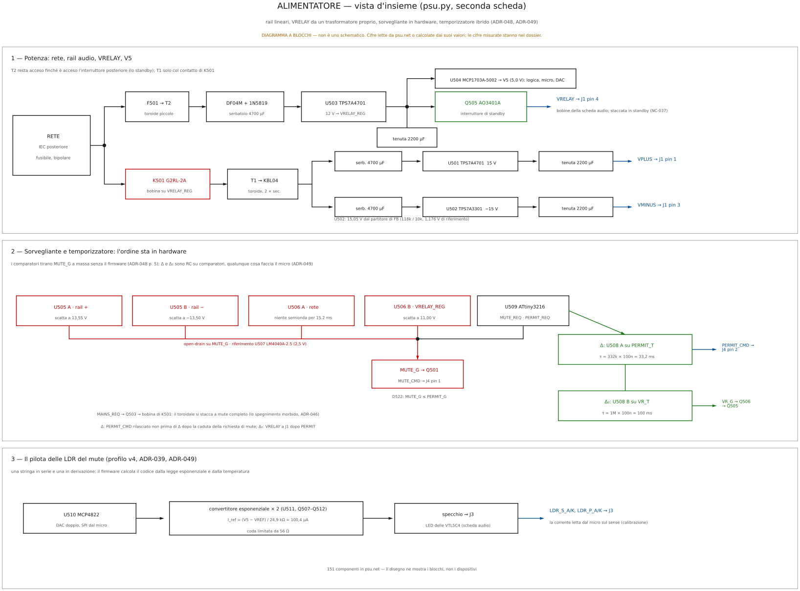
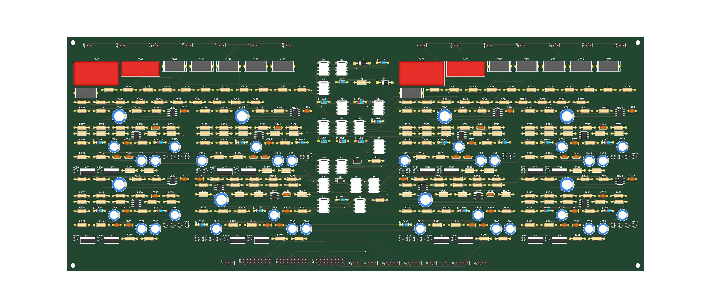
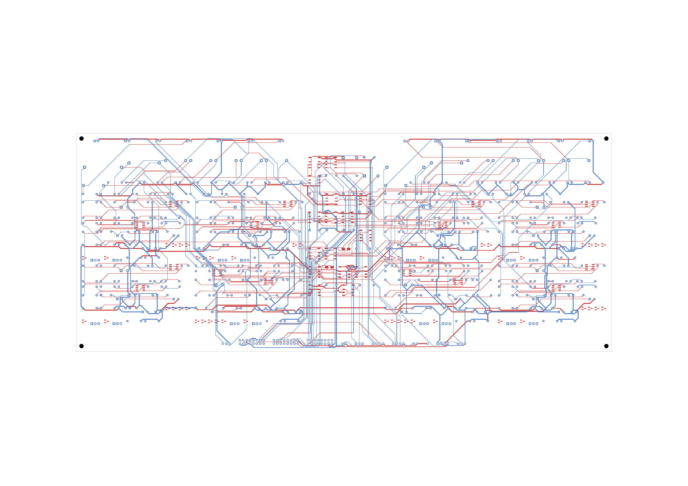
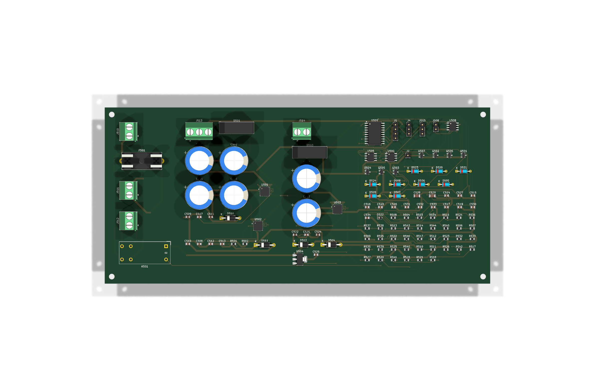
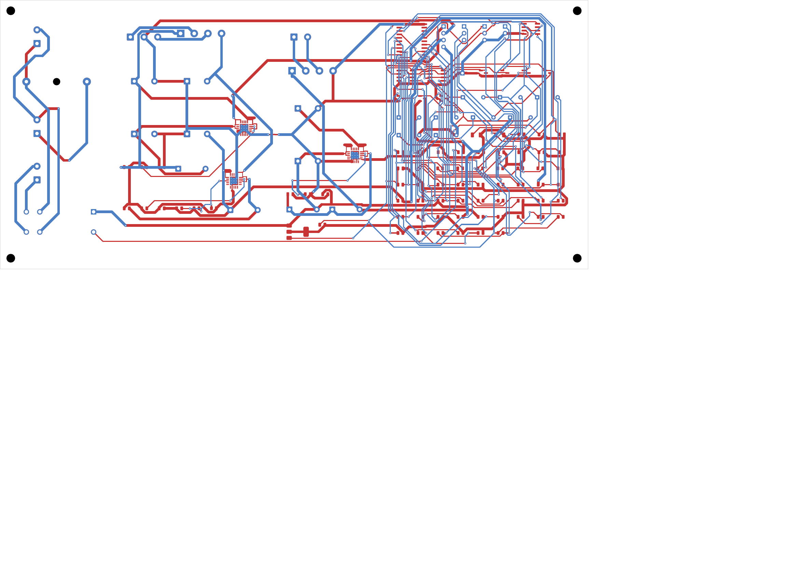
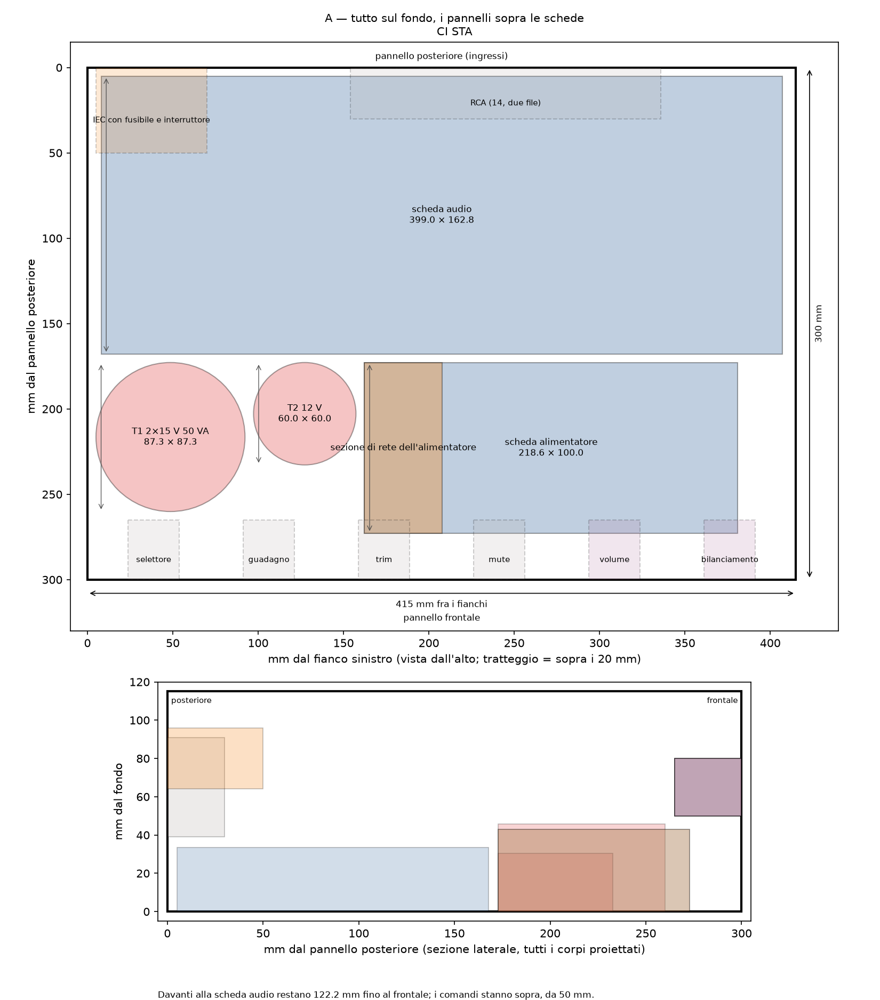

Scheda audio · deck corsi il 2026-10-09 (L51a) sul circuito di L48b · seconda strada: la corsa di L48b · mute dalla matrice di L48b · interblocco da L35 e L36 · alimentatore corso il 2026-10-09 (L51b) col carico di oggi; seconda strada: il carico di prima, L47c2a e L47c2b2 · distorsione corsa il 2026-10-10 (L51c); seconda strada: L46b · schede di prova di L49a e L49b, DRC rifatta il 2026-10-10
Dossier di misura del preamplificatore di linea
Classe A pura a componenti discreti, senza operazionali nel percorso del segnale. Quattro ingressi a relè con un condensatore ciascuno, guadagno 0 / +3 / +10 dB, trim 0 / −6 / −12 dB sull’uscita variabile, volume a potenziometro col bilanciamento, mute coi soli relè al jack. Le due schede: la scheda audio, poi l’alimentatore, coi rail lineari, il sorvegliante in hardware e il temporizzatore che ordina mute, guadagno e rete. Le due schede sono state piazzate e sbrogliate per prova, e l’assieme sta nel contenitore (sezione 25).
- Guadagni a 1 kHz
- −0,01 · +3,04 · +9,96dB · 0 / +3 / +10 · sorgente 1,5 Ω
- V1, margine minimo
- 64,42°soglia 60° · guardia 4,42° · blocco B · sorgente del bilanciamento
- Headroom, NC-009
- +6,36 dBmetrica M1 · +10 dB col trim a −6 dB
- E3, min |Zin|
- 108,2 kΩal jack d’ingresso, col selettore, ogni posizione del trim
- F1, cambio d’ingresso
- 19,818 µVil peggiore sulle uscite con sorgenti fino a 100 mV di continua
- V2, mute
- 250 su 250verdetti che reggono · il clic del taglio dichiarato
- Scarto ADR-014
- 1,60·10−4dB a 20 kHz rif. 1 kHz · peggiore dei 3 modi
- V4, THD a 20 kHz
- 0,000596 %0,2 V · tetto 0,001 % · cifra di modello
- PSRR, peggiore
- 78,52 dBa 10 kHz
- E4, Re(Zout) max
- 60,08 Ωal jack · 20 Hz–20 kHz · 3 uscite, costante col volume
- Δ, angolo minimo
- 16,91 mscol micro in reset · soglia 10 ms (ADR-045)
- Guasto dell’alimentatore, al jack
- 51,7 dB SPLil peggiore sul circuito, col carico di oggi · di picco a 1 m
.include dei deck, non dichiarata.Il progetto sostituisce un Technics SU-9070 la cui struttura di guadagno richiede 46 dB di attenuazione, causa misurabile della mancanza di dinamica lamentata. La topologia canonica è in circuits/preamp/; i banchi di prova in spice/preamp/tb/; i dati dei deck in docs/preamp/data/2026-10-09/L51a/dopo/, corsi oggi sul circuito di main; quelli del mute, del volume e dell’interblocco nelle cartelle dei loro lotti, nominate sotto ogni sezione.
0Il contratto: il Product Requirements Book
Approvato dall'utente il 2026-09-27 (L42c): «l'ho letto e posso firmarlo con le integrazioni attuali». Registrato da ADR-053. Da qui, cambiare una voce vuole una ADR.
Voci cambiate dopo la firma, ognuna con la firma dell'utente e la sua ADR:
- PR-21, il 2026-10-04 (ADR-062): da «Il mute sfuma, non taglia» (≤ 20 dB in 100 ms, dal Technics) a «Il mute taglia». Scelta dell'utente: «Taglio coi soli relè».
- PR-10, PR-16, PR-19, PR-20, il 2026-10-07 (ADR-065, L48b): il volume da attenuatore a scatti a un buon potenziometro col bilanciamento; i canali entro 1 dB col volume; il volume fra gli eventi che non si sentono. Firma dell'utente: «Firmo così».
- PR-14, il 2026-10-09 (ADR-066, L51a): la sola riga «Dettagli», da «il selettore è ancora da progettare» al rimando ad ADR-064 col suo limite. Scelta dell'utente: «Rimando e limite».
Che cos'è, e come sta con gli altri documenti
È il contratto fra l'utente e il team: che cosa l'apparecchio deve fare, e perché, in al massimo tre righe per voce. È l'ingresso di ogni revisione e di ogni lotto che segue.
Non è una seconda copia dei requisiti, perché lavora su un altro livello:
- qui c'è il cosa e il perché, nelle parole di chi usa l'apparecchio;
REQUIREMENTS.mdha il come si misura: soglie, metodi, casi da coprire;- le ADR (
decisions/) hanno il come si è deciso.
La riga «Dettagli» di ogni voce nomina i requisiti tecnici e le ADR che la realizzano. Se un requisito tecnico e una voce di qui si contraddicono, è un difetto da decidere con l'utente, non una seconda verità.
I gradini sulle uscite si dicono in dB SPL di picco a 1 m, con la catena di NC-028: il finale ×21,1, le Heresy da 96 dB/1 W/1 m. Una stanza silenziosa sta a 25–35 dB(A). «Su ogni uscita» vuol dire la principale e le due fisse.
A. Lo scopo
PR-1 Sostituire il Technics SU-9070 e correggere la sua struttura di guadagno. Con le sorgenti e il finale di casa il volume deve lavorare a circa 30 dB di attenuazione, non a 46: è la causa misurabile della mancanza di dinamica.
Dettagli: E1, E3b · ADR-001 · il contesto d'uso in REQUIREMENTS.md.
PR-2 Per questa catena, non per una generica. Sorgenti: il phono MC a valvole (0,5 V, 430 Ω) e il FiiO K11 (2,7 V). Carichi: il cj EV250 sull'uscita principale, il Singxer SA-1 e lo Stax SRM-T1 sulle due fisse. Diffusori Klipsch Heresy.
Dettagli: «Contesto d'uso» in REQUIREMENTS.md.
B. Il suono
PR-3 Guadagno 0 dB di base, +3 e +10 dB quando servono. Il preamplificatore non amplifica per default. I due livelli in più servono a una sorgente debole.
PR-4 Un circuito puro: classe A, tutto a componenti discreti, niente operazionali né servo nel percorso del segnale. Un solo stadio, progettato una volta e usato ovunque, così ogni uscita suona uguale.
Dettagli: T1, T2, T3, T6 · ADR-003, ADR-006, ADR-007, ADR-014, ADR-022, ADR-023.
PR-5 Silenzioso sulle trombe. Il rumore in uscita, alimentazione compresa, resta sotto i 10 µV (circa +13 dB SPL a 1 m, inudibile in poltrona): le Heresy da 96 dB non perdonano.
PR-6 Invisibile alla catena. Non carica il phono a valvole (Zin ≥ 100 kΩ), pilota il finale e i cavi con Zout < 100 Ω costante col volume, e accetta i 2,7 V del K11 senza saturare.
Dettagli: E3, E4, E6, E8, V3 · ADR-002, ADR-007, ADR-027 · NC-009.
PR-7 Stabile con qualunque cavo e carico reale, in ogni posizione di comandi e volume: margine di fase ≥ 60°, una scelta severa e consapevole.
PR-8 Niente di aspro. La distorsione non cresce verso gli acuti, le armoniche alte (dalla 5ª in su) restano molto sotto le basse, e l'intermodulazione è bassa; un tetto complessivo di THD+N fa da garanzia. Le soglie si fissano con l'utente sulle prime misure.
Dettagli: V4 · ADR-053: il carattere conta più del numero, nessuna preferenza sulla 2ª.
PR-9 Piatto in banda. Su ogni uscita, in ogni modo, posizione di trim e volume, coi carichi reali: entro ±0,2 dB da 20 Hz a 20 kHz, riferito a 1 kHz. Nessuna banda minima o massima imposta oltre questo.
PR-10 I due canali uguali e separati. Fra sinistro e destro al più 0,2 dB in ogni posizione di trim e guadagno, e al più 1 dB col volume, col bilanciamento regolato all'ascolto (lo spostamento dell'immagine resta sotto ~2,5°); da 20 Hz a 20 kHz. La diafonia ≤ −70 dB.
Dettagli: E10, E11 · ADR-053, ADR-065 · la sorgente non selezionata resta fuori.
PR-11 Niente continua verso il finale. A regime ogni uscita porta al jack al più 1 mV di continua, anche coi condensatori montati per prova d'ascolto (PR-12): le prove si fanno con i tipi di una lista ammessa.
Dettagli: E12, P6 · ADR-007, ADR-053 · l'offset interno resta senza soglia.
PR-12 Il giudizio del suono è dell'utente, sull'hardware. Condensatori di segnale e resistenze critiche si cambiano senza dissaldare, per provarli all'ascolto. Nessun agente dichiara come suona il circuito.
Dettagli: P6 · AGENTS.md.
C. L'uso e i comandi
PR-13 Quattro ingressi, tre uscite. Quattro ingressi RCA a relè. Un'uscita principale col volume, per il finale; due uscite fisse, copia fedele della sorgente, per Singxer e Stax.
PR-14 L'ingresso si cambia quando si vuole, senza clic. Senza musica, cambiare sorgente lascia sulle uscite al più 100 µV (~33 dB SPL, come PR-20); con la musica il salto fra i due programmi è accettato. Ogni ingresso, anche non selezionato, sta a 0 V.
Dettagli: F1, V2 · ADR-053, ADR-064, ADR-066 · regge con sorgenti fino a ~0,65 V di continua.
PR-15 Le uscite fisse sono fedeli quanto la principale: soddisfano ogni requisito che vale per lei, a guadagno 0 dB ± 0,1 dB. Se la tolleranza si rivela costosa, si rilassa con l'utente e con una ADR.
PR-16 Il volume è un buon potenziometro, non a scatti, con un bilanciamento davanti che al centro non attenua. Nessuna continua passa da nessuno dei due.
PR-17 Il trim (0, −6, −12 dB) agisce solo sull'uscita principale e si cambia solo in mute. Tre LED dicono il suo stato vero, non la posizione del comando.
PR-18 Il guadagno si cambia solo in mute, con tre LED del suo stato vero. A relè a riposo, per un guasto o all'accensione, è sempre 0 dB: mai più alto.
Dettagli: F5 e la sua nota, F11 · ADR-026, ADR-030, ADR-041.
PR-19 Tutto sul frontale, niente di più. Selettore, volume, bilanciamento, trim, guadagno e l'interruttore di mute, rotativi, col LED rosso di mute. Niente telecomando, niente digitale, niente toni o filtri, niente bilanciato, niente phono integrato.
Dettagli: F7, F10, F11, «NON-obiettivi» · ADR-009, ADR-028, ADR-065.
D. Nessun rumore fastidioso sulle uscite
PR-20 Nessuna commutazione si sente. Cambiare ingresso, guadagno o trim, girare il volume, inserire o togliere il mute, accendere o spegnere dal frontale: su ogni uscita al più 100 µV di picco (~33 dB SPL a 1 m, il livello di una stanza silenziosa), in ogni condizione.
Dettagli: V2 (A e B) · ADR-032, ADR-035, ADR-036, ADR-044, ADR-045, ADR-065.
PR-21 Il mute taglia: con la musica il silenzio arriva di colpo, e al rilascio la musica torna di colpo al livello di prima. Firmata dall'utente il 2026-10-04 (L47c).
Dettagli: V2 (il clic del taglio, misurato e dichiarato) · ADR-044, ADR-062.
E. Fallire senza danni
PR-22 Il mute regge a tempo indefinito, e ogni uscita regge un corto, anche permanente, senza che niente si scaldi oltre i propri limiti.
Dettagli: F6, P7, T1 (eccezione) · ADR-012, ADR-021, ADR-023.
PR-23 Se manca la rete o si guasta l'alimentatore, le uscite si staccano da sole, in hardware, prima che il circuito esca di regolazione. Al jack principale l'obiettivo è ≤ 2 mV (~60 dB SPL a 1 m), e in nessun caso più di 0,87 V (~112 dB, il tetto di non-danno).
PR-24 La sicurezza non dipende dal firmware. Senza firmware, con il micro bloccato o in reset, l'apparecchio resta muto e il guadagno non può cambiare con le uscite collegate.
PR-25 Accensione e spegnimento morbidi dal frontale; l'interruttore posteriore stacca tutto. Da spento sul frontale l'apparecchio resta in standby e consuma ≤ 0,5 W alla presa, trasformatore compreso: un obiettivo nostro (l'apparecchio è per uso personale), rilassabile.
PR-26 Collegato alla rete, sicuro. Un'analisi di sicurezza di rete è obbligatoria prima della fabbricazione; senza, il progetto non va avanti.
F. Il fisico
PR-27 Un solo telaio, grande quanto il SU-9070 (450 × 130 × 367 mm), con l'alimentatore a bordo, due trasformatori toroidali e nessun alimentatore switching.
PR-28 Sta in un vano chiuso della libreria: con la stanza a 35 °C, dentro il telaio non più di 60 °C, se attorno restano almeno 3 cm.
PR-29 Si può costruire e riparare. Nessuna parte a fine vita, e ogni dispositivo attivo del segnale ha un modello del costruttore, così le misure simulate sono credibili.
Come si è arrivati qui
La bozza (23 voci) è stata scritta rileggendo REQUIREMENTS.md. Rileggendolo sono emersi sette punti senza un requisito, decisi con l'utente il 2026-09-27, uno alla volta (ADR-053):
| Punto aperto | Decisione | Voce |
|---|---|---|
| La distorsione non aveva una soglia | «niente di aspro»; nessuna preferenza sulla 2ª armonica; le soglie sulle prime misure | PR-8 |
| La risposta in frequenza non aveva una soglia | ±0,2 dB da 20 Hz a 20 kHz, e nient'altro | PR-9 |
| Equilibrio fra i canali e diafonia | ≤ 0,2 dB e ≤ −70 dB; la sorgente non selezionata fuori | PR-10 |
| Il cambio d'ingresso a caldo | a caldo, senza clic | PR-14 |
| L'offset in continua alle uscite | ≤ 1 mV al jack; prove d'ascolto dentro una lista di tipi ammessi | PR-11 |
| Le uscite fisse, fedeli quanto? | come la principale, 0 dB ± 0,1 dB, rilassabile | PR-15 |
| Il consumo in standby, «entro il regolamento» | ≤ 0,5 W alla presa, obiettivo nostro, rilassabile | PR-25 |
1Il blocco di guadagno
Il blocco è uno solo (ADR-006) e il prodotto lo usa otto volte: per canale, il blocco A (buffer d’ingresso), i due buffer delle uscite fisse (ADR-023) e il blocco B (uscita variabile). È l’oggetto da giudicare. La compensazione è quella di ADR-054 (il VAS a corrente più alta e il Miller più piccolo, per la distorsione verso gli acuti); una cella RC per blocco alimenta specchio d’ingresso e VAS dal rail positivo (ADR-056).

2Il preamplificatore intero
Per canale: il selettore a quattro ingressi, ciascuno col suo condensatore (sezione 3); il blocco A; le due uscite fisse coi loro buffer; il trim, poi CT, poi il volume a potenziometro col bilanciamento (sezione 8); il blocco B; il mute coi relè al jack su tutte e tre le uscite (sezione 15).

3Il selettore d’ingresso: F1
Deck spice/preamp/tb/tb_f1_selettore.cir · dati docs/preamp/data/2026-10-09/L51a/dopo/tb_f1_selettore/
Modelli del costruttore: 1N4148, LS352, LSK489, MJE15032, MJE15033, MMBT5401, MMBT5551 · segnaposto scritti a mano: nessuno · rumore 1/f: LSK489 col KF del costruttore; LS352, MJE15032, MJE15033, MMBT5401, MMBT5551 al tetto di ADR-057; KF = 0 su 1N4148
F1 (PR-14): senza musica, cambiare sorgente lascia sulle uscite al più 100 µV di picco (~33,4 dB SPL); ogni ingresso, anche non selezionato, sta a 0 V. Il selettore di ADR-064 dà a ogni ingresso un condensatore in serie, una resistenza a massa dal lato del preamp e una sul jack, e un relè monostabile dalla manopola: a ogni cambio un contatto si apre e un altro si chiude, senza mute. Il banco cambia da una sorgente a 0 V a una alla continua VB, col trasferimento del relè (il nuovo si chiude 1 ms dopo) o con la sovrapposizione (1 ms prima: l’ordine di due monostabili non è garantito).
| VB | Contatti | fissa | principale 0 dB | principale +3 dB | principale +10 dB | Esito |
|---|---|---|---|---|---|---|
| 0 V | trasferimento | 6,281 µV | 6,286 µV | 8,926 µV | 19,808 µV | regge |
| 10 mV | trasferimento | 6,281 µV | 6,286 µV | 8,927 µV | 19,809 µV | regge |
| 100 mV | trasferimento | 6,284 µV | 6,289 µV | 8,931 µV | 19,818 µV | regge |
| 1 V | trasferimento | 44,275 µV | 44,28 µV | 63,005 µV | 139,84 µV | oltre F1 |
| 100 mV | sovrapposizione | 995,553 nV | 1,105 µV | 1,57 µV | 3,483 µV | regge |
| 1 V | sovrapposizione | 23,027 µV | 23,58 µV | 31,65 µV | 70,807 µV | regge |
Fino a 100 mV di continua il gradino è quello del contatto stesso, lo stesso con due sorgenti a 0 V: al principale a +10 dB 19,808 µV (~19,4 dB SPL). Cresce con VB per la perdita del condensatore sulla resistenza dell’ingresso non scelto (il poliestere peggiore, 10 000 s): a 1 V 139,84 µV. Col gradino di fondo più la parte che cresce con la continua, il principale a +10 dB tocca F1 a ~0,67 V di continua della sorgente: è il limite che ADR-064 dichiara, arrotondato per difetto, e che i «Dettagli» di PR-14 riportano. Il controfattuale, l’ingresso di prima del selettore, con 10 mV dà 10,099 mV sul fisso e 31,567 mV sul principale: il banco distingue.
Netlist circuits/preamp/preamp_audio.net · il 2e di run_tests.sh, rieseguito da questa pagina
| Ingresso | Jack | Condensatore | R sul jack | R lato preamp | Relè (NO) |
|---|---|---|---|---|---|
| IN1_L | J101 | C171 1u | R175 | R171 | K13 |
| IN2_L | J102 | C172 1u | R176 | R172 | K14 |
| IN3_L | J103 | C173 1u | R177 | R173 | K15 |
| IN4_L | J104 | C174 1u | R178 | R174 | K16 |
| IN1_R | J301 | C371 1u | R375 | R371 | K13 |
| IN2_R | J302 | C372 1u | R376 | R372 | K14 |
| IN3_R | J303 | C373 1u | R377 | R373 | K15 |
| IN4_R | J304 | C374 1u | R378 | R374 | K16 |
4Punti di lavoro
Deck spice/preamp/tb/tb_op.cir · dati docs/preamp/data/2026-10-09/L51a/dopo/tb_op/
Modelli del costruttore: 1N4148, LS352, LSK489, MJE15032, MJE15033, MMBT5401, MMBT5551 · segnaposto scritti a mano: nessuno · rumore 1/f: LSK489 col KF del costruttore; LS352, MJE15032, MJE15033, MMBT5401, MMBT5551 al tetto di ADR-057; KF = 0 su 1N4148
Corrente dai rail e punto di lavoro di ogni dispositivo attivo, a ingresso a massa. L’uscita del blocco sta a −6,6232 mV (ADR-056): nel blocco A questa continua attraversa il trim, e CT la ferma prima del volume; RG tiene a massa il cursore, cioè il gate del blocco B (ADR-065).
| Grandezza | Valore |
|---|---|
| Corrente dal rail +15 V | 36,7025 mA |
| Corrente dal rail −15 V | 37,7233 mA |
| Uscita del blocco, v(OUT) | −6,6232 mV |
| Dispositivo | IC / ID [mA] | VBE / VGS [V] | VBC [V] |
|---|---|---|---|
| JQ110A | 2,2622 | -0,1351 | — |
| JQ110B | 2,2433 | -0,1393 | — |
| Q106 | 4,5054 | 0,7043 | -12,7275 |
| Q117 | 2,2413 | 0,6871 | -3,3163 |
| Q118 | 2,2226 | 0,6869 | -3,4021 |
| Q121A | -2,21 | 0,7038 | 0,5106 |
| Q121B | -2,1584 | 0,703 | 0,4163 |
| Q122 | -10,713 | 0,6697 | -12,3994 |
| Q125 | 10,6018 | 0,7266 | -10,764 |
| Q127 | 9,6945 | 0,7253 | 0,4247 |
| Q132 | 20,4972 | 0,5661 | -13,9833 |
| Q133 | -20,6084 | 0,5392 | -13,991 |
5Risposta in frequenza
Deck spice/preamp/tb/tb_ac.cir · dati docs/preamp/data/2026-10-09/L51a/dopo/tb_ac/
Modelli del costruttore: 1N4148, LS352, LSK489, MJE15032, MJE15033, MMBT5401, MMBT5551 · segnaposto scritti a mano: nessuno · rumore 1/f: LSK489 col KF del costruttore; LS352, MJE15032, MJE15033, MMBT5401, MMBT5551 al tetto di ADR-057; KF = 0 su 1N4148

| Curva | 20 Hz | 1 kHz | 20 kHz | 100 kHz |
|---|---|---|---|---|
| 0 dB · sorgente 1,5 Ω (K11) | −0,0098 dB | −0,0071 dB | −0,0034 dB | 0,0755 dB |
| 0 dB · sorgente 2500 Ω (volume a metà) | −0,0315 dB | −0,0288 dB | −0,0250 dB | 0,0552 dB |
| +3 dB · sorgente 1,5 Ω (K11) | 3,0364 dB | 3,0390 dB | 3,0248 dB | 2,7090 dB |
| +3 dB · sorgente 2500 Ω (volume a metà) | 3,0148 dB | 3,0174 dB | 3,0032 dB | 2,6891 dB |
| +10 dB · sorgente 1,5 Ω (K11) | 9,9596 dB | 9,9621 dB | 9,9060 dB | 8,7451 dB |
| +10 dB · sorgente 2500 Ω (volume a metà) | 9,9380 dB | 9,9405 dB | 9,8845 dB | 8,7265 dB |
La claim falsificabile di ADR-014
Il volume ha un’impedenza d’uscita che varia con la manopola. Se il cascode d’ingresso fa il suo lavoro, la forma della risposta non si muove: la risposta a 20 kHz riferita a quella a 1 kHz resta la stessa con la sorgente a 1,5 Ω e a 2500 Ω, in ogni modo.

| Modo | scarto assoluto a 1 kHz | scarto assoluto a 20 kHz | 20 kHz riferito a 1 kHz — la claim |
|---|---|---|---|
| 0 dB | −0,02167 dB | −0,02162 dB | 5,11·10−5 dB |
| +3 dB | −0,02167 dB | −0,02160 dB | 7,30·10−5 dB |
| +10 dB | −0,02167 dB | −0,02151 dB | 1,60·10−4 dB |
Ogni scarto è «sorgente 2500 Ω meno sorgente 1,5 Ω». Le colonne di scarto assoluto coincidono a 1 kHz e a 20 kHz perché sono una perdita di livello a banda larga, il partitore fra la sorgente e la Zin del blocco: non misurano la claim. La claim è l’ultima colonna.
Il taglio in bassa, col carico da 50 kΩ
Con il carico Stax-like da 50 kΩ: −0,0149 dB a 1 kHz, −0,0224 dB a 20 Hz, −0,1331 dB a 5 Hz. Il polo è quello del condensatore d’uscita da 4,7 µF (E8, ADR-007).
6Stabilità: la matrice V1
Deck spice/preamp/tb/tb_loop.cir · dati docs/preamp/data/2026-10-09/L51a/dopo/tb_loop/ (blocco B)
Modelli del costruttore: 1N4148, LS352, LSK489, MJE15032, MJE15033, MMBT5401, MMBT5551 · segnaposto scritti a mano: nessuno · rumore 1/f: LSK489 col KF del costruttore; LS352, MJE15032, MJE15033, MMBT5401, MMBT5551 al tetto di ADR-057; KF = 0 su 1N4148
Deck spice/preamp/tb/tb_loop_blockA.cir · dati docs/preamp/data/2026-10-09/L51a/dopo/tb_loop_blockA/ (blocco A)
Modelli del costruttore: 1N4148, LS352, LSK489, MJE15032, MJE15033, MMBT5401, MMBT5551 · segnaposto scritti a mano: nessuno · rumore 1/f: LSK489 col KF del costruttore; LS352, MJE15032, MJE15033, MMBT5401, MMBT5551 al tetto di ADR-057; KF = 0 su 1N4148
Deck spice/preamp/tb/tb_loop_bufferfissa.cir · dati docs/preamp/data/2026-10-09/L51a/dopo/tb_loop_bufferfissa/ (buffer delle fisse)
Modelli del costruttore: 1N4148, LS352, LSK489, MJE15032, MJE15033, MMBT5401, MMBT5551 · segnaposto scritti a mano: nessuno · rumore 1/f: LSK489 col KF del costruttore; LS352, MJE15032, MJE15033, MMBT5401, MMBT5551 al tetto di ADR-057; KF = 0 su 1N4148
Soglia: 60° su ogni combinazione della matrice (ADR-019). Dove si applica la sonda lo dice ADR-024: la sonda capacitiva è il cavo d’interconnessione e sta al jack, dopo i 47 Ω e il 4,7 µF, sul blocco B e sui buffer delle fisse; il verdetto è il minimo sulla spazzata fino a 4,7 nF, non il valore a 4,7 nF. Il blocco A pilota il cablaggio interno fino al volume e si giudica con una capacità realistica, ≤ 1 nF. La sonda sul nodo d’uscita resta come informazione.
Iniezione di tensione al gate del JFET invertente: quel nodo non assorbe corrente e la rete di controreazione lo pilota a bassa impedenza, quindi l’iniezione semplice è esatta. I relè commutano la rete di controreazione, quindi il margine è diverso nei tre modi, e l’impedenza del volume cambia con la manopola: per questo si spazza tutto.
| Istanza | Dove cade il minimo | Minimo della spazzata | A 4,7 nF | Sonda sul nodo | Esito |
|---|---|---|---|---|---|
| Blocco B · 0 dB | sorgente 2,611 kΩ · carico 100 kΩ · cavo 3,3 nF | 65,159° | 65,186° | 48,983° | conforme |
| Blocco B · +3 dB | sorgente 2,611 kΩ · carico 100 kΩ · cavo 3,3 nF | 73,556° | 73,858° | 56,651° | conforme |
| Blocco B · +10 dB | sorgente 2,611 kΩ · carico 100 kΩ · cavo 4,7 nF | 105,084° | 105,084° | 100,830° | conforme |
| Blocco A · trim 0 dB | sorgente 430 Ω · cablaggio 1 nF | 68,546° | — | — | conforme |
| Blocco A · trim −6 dB | sorgente 430 Ω · cablaggio 470 pF | 73,474° | — | — | conforme |
| Blocco A · trim −12 dB | sorgente 430 Ω · cablaggio 470 pF | 73,663° | — | — | conforme |
| Buffer delle fisse | carico 50 kΩ · cavo 3,3 nF | 65,371° | — | 45,631° | conforme |
| Blocco B · sorgente del bilanciamento | sorgente 5,6 kΩ · 0 dB · carico 100 kΩ · cavo 3,3 nF | 64,420° | — | — | conforme |
Blocco B: 110 righe per modo al jack, sorgenti del volume da 1 mΩ a (10 kΩ + Thévenin del trim)/4, carichi 100 kΩ e 10 kΩ; la compensazione è quella di ADR-054. Col bilanciamento il blocco B vede sorgenti più alte: l’ultima riga è il minimo fino a 5,6 kΩ (sezione 8). Blocco A: scala 845 / 464 / 464 Ω; senza trim il minimo è 68,504° (sorgente 430 Ω, 1 nF). Con 4,7 nF sul cablaggio, che ADR-024 non chiede, il blocco A a trim 0 dB scende a 46,26°.

Il verdetto è il minimo della curva al jack, non il valore a 4,7 nF: a 0 dB il minimo, 65,16°, cade a 3,3 nF, e a 4,7 nF la stessa curva vale 65,19°. Sul nodo, dove nessun cavo vero sta, lo stesso blocco scende a 48,98°.
Il guadagno d’anello

| Blocco B, sorgente 2,5 kΩ, carico 100 kΩ | |T| a 10 Hz | frequenza d’incrocio | margine |
|---|---|---|---|
| 0 dB · cavo 3,3 nF | 78,72 dB | 807,376 kHz | 65,186° |
| +3 dB · cavo 3,3 nF | 75,35 dB | 786,616 kHz | 73,583° |
| +10 dB · cavo 4,7 nF | 68,02 dB | 422,818 kHz | 105,099° |
7Il trim e l’impedenza d’ingresso
Deck spice/preamp/tb/tb_trim.cir · dati docs/preamp/data/2026-10-09/L51a/dopo/tb_trim/
Modelli del costruttore: 1N4148, LS352, LSK489, MJE15032, MJE15033, MMBT5401, MMBT5551 · segnaposto scritti a mano: nessuno · rumore 1/f: LSK489 col KF del costruttore; LS352, MJE15032, MJE15033, MMBT5401, MMBT5551 al tetto di ADR-057; KF = 0 su 1N4148
Il trim è uno solo, fra l’uscita del blocco A e il volume (ADR-027): le uscite fisse prendono il segnale prima di lui e restano copia fedele della sorgente. Scala per canale 845 / 464 / 464 Ω, a relè bistabili. L’attenuazione è misurata col carico che ha davanti: CT, il volume e il bilanciamento al centro (ADR-065).
| Posizione | Attenuazione a 1 kHz |
|---|---|
| 0 dB | −0,0001 dB |
| −6 dB | −6,0762 dB |
| −12 dB | −11,9968 dB |
E3 chiede ≥ 100 kΩ al connettore d’ingresso in ogni posizione del trim, sul minimo di |Zin| fra 20 Hz e 20 kHz («Nota su E3»). Il connettore vede la rete dell’ingresso (ADR-064) e il blocco A; la capacità del selettore e del cablaggio è spazzata.
| Posizione del trim | selettore 1 fF | selettore 22 pF | selettore 68 pF | Esito |
|---|---|---|---|---|
| senza trim (riferimento) | 309,822 kΩ | 231,309 kΩ | 108,225 kΩ | — |
| 0 dB | 309,822 kΩ | 231,31 kΩ | 108,225 kΩ | conforme |
| −6 dB | 309,822 kΩ | 231,309 kΩ | 108,225 kΩ | conforme |
| −12 dB | 309,822 kΩ | 231,309 kΩ | 108,225 kΩ | conforme |
Il deck canonico di E3 ed E5
Deck spice/preamp/tb/tb_e3_e5.cir · dati docs/preamp/data/2026-10-09/L51a/dopo/tb_e3_e5/
Modelli del costruttore: 1N4148, LS352, LSK489, MJE15032, MJE15033, MMBT5401, MMBT5551 · segnaposto scritti a mano: nessuno · rumore 1/f: LSK489 col KF del costruttore; LS352, MJE15032, MJE15033, MMBT5401, MMBT5551 al tetto di ADR-057; KF = 0 su 1N4148
Lo stesso ingresso, letto al jack, nel deck che porta E3 ed E5 dalla rete di ADR-064 alla catena col volume:
| Posizione del trim | selettore 1 fF | selettore 22 pF | selettore 68 pF | Esito |
|---|---|---|---|---|
| 0 dB | 309,822 kΩ | 231,31 kΩ | 108,225 kΩ | conforme |
| −6 dB | 309,822 kΩ | 231,309 kΩ | 108,225 kΩ | conforme |
| −12 dB | 309,822 kΩ | 231,309 kΩ | 108,225 kΩ | conforme |
8Il volume col bilanciamento
Deck docs/preamp/data/2026-10-07/L48b/e5_bilanciamento/tb_e5_bilanciamento.cir · dati docs/preamp/data/2026-10-09/L51a/dopo/bilanciamento/tb_e5_bilanciamento/ · copia del deck col bilanciamento girato di 3 dB (L48b), ricorsa oggi
Modelli del costruttore: 1N4148, LS352, LSK489, MJE15032, MJE15033, MMBT5401, MMBT5551 · segnaposto scritti a mano: nessuno · rumore 1/f: LSK489 col KF del costruttore; LS352, MJE15032, MJE15033, MMBT5401, MMBT5551 al tetto di ADR-057; KF = 0 su 1N4148
Deck docs/preamp/data/2026-10-07/L48b/v1_bilanciamento/tb_loop_bilanciamento.cir · dati docs/preamp/data/2026-10-09/L51a/dopo/bilanciamento/tb_loop_bilanciamento/ · copia di tb_loop.cir con le sorgenti del bilanciamento (L48b), ricorsa oggi
Modelli del costruttore: 1N4148, LS352, LSK489, MJE15032, MJE15033, MMBT5401, MMBT5551 · segnaposto scritti a mano: nessuno · rumore 1/f: LSK489 col KF del costruttore; LS352, MJE15032, MJE15033, MMBT5401, MMBT5551 al tetto di ADR-057; KF = 0 su 1N4148
Il volume è un potenziometro, non più un attenuatore a scatti, con un bilanciamento davanti (ADR-065, PR-16): fra il trim e il volume c’è CT, che ferma la continua del blocco A (NC-041), e RG tiene a massa il cursore, il gate del blocco B. Senza CT la continua del blocco A attraversava trim e volume, e ogni movimento del cursore la portava al jack come un gradino.
Banco docs/preamp/data/2026-10-07/L48b/scatti/genera_scatti.py · dati docs/preamp/data/2026-10-07/L48b/scatti/ · analizza.py rieseguito da questa pagina, uguale byte per byte
Il banco di L48b muove il cursore del volume a passi di 2 dB, in cima alla corsa e verso il fondo, e legge il gradino al jack: col cursore che chiude il punto nuovo prima di aprire il vecchio, e con quello che resta aperto 1 ms fra i due.
| Evento | al jack, il peggiore | di picco a 1 m |
|---|---|---|
| un passo del cursore, il circuito di prima (senza CT) | 19,53 mV | 79,3 dB SPL |
| un passo del cursore, oggi, contatto che chiude prima di aprire | 0,227 nV | sotto 0 dB SPL |
| un passo del cursore, oggi, contatto aperto per 1 ms | 48,32 nV | sotto 0 dB SPL |
| il cambio del trim fuori mute, oggi (limite per eccesso) | 42,74 mV | 86,1 dB SPL |
«Il peggiore» è il peggiore delle continue del blocco A del banco, la nominale e i ±30 mV della dispersione dei pezzi, sui tre guadagni e sui due eventi del volume. Il cambio del trim fuori mute è un limite per eccesso: il trim si cambia solo a mute inserito (ADR-027), e il caso vero è il gruppo 2 della matrice di V2 (sezione 15).
| Sorgente del blocco B | Dove cade il minimo | V1, minimo | Esito |
|---|---|---|---|
| 2,611 kΩ | 0 dB · carico 100 kΩ · cavo 3,3 nF · 66 celle | 65,159° | conforme |
| 3,77 kΩ | 0 dB · carico 100 kΩ · cavo 3,3 nF · 66 celle | 64,870° | conforme |
| 5,07 kΩ | 0 dB · carico 100 kΩ · cavo 3,3 nF · 66 celle | 64,550° | conforme |
| 5,6 kΩ | 0 dB · carico 100 kΩ · cavo 3,3 nF · 66 celle | 64,420° | conforme |
E5 col bilanciamento al centro 5,496 µV, girato di 3 dB 5,601 µV, contro 10 µV.
| Canale | Dal trim | CT | Al volume | Cursore | RG |
|---|---|---|---|---|---|
| VOL_L | L_TRIM_OUT | C265 10u | J120 | L_ATT_W | R265 |
| VOL_R | R_TRIM_OUT | C465 10u | J320 | R_ATT_W | R465 |
9Rumore in uscita
Deck spice/preamp/tb/tb_zout_psrr_noise.cir · dati docs/preamp/data/2026-10-09/L51a/dopo/tb_zout_psrr_noise/
Modelli del costruttore: 1N4148, LS352, LSK489, MJE15032, MJE15033, MMBT5401, MMBT5551 · segnaposto scritti a mano: nessuno · rumore 1/f: LSK489 col KF del costruttore; LS352, MJE15032, MJE15033, MMBT5401, MMBT5551 al tetto di ADR-057; KF = 0 su 1N4148
Deck spice/preamp/tb/tb_noise_breakdown.cir · dati docs/preamp/data/2026-10-09/L51a/dopo/tb_noise_breakdown/
Modelli del costruttore: 1N4148, LS352, LSK489, MJE15032, MJE15033, MMBT5401, MMBT5551 · segnaposto scritti a mano: nessuno · rumore 1/f: LSK489 col KF del costruttore; LS352, MJE15032, MJE15033, MMBT5401, MMBT5551 al tetto di ADR-057; KF = 0 su 1N4148
E5 chiede meno di 10 µV RMS in uscita fra 20 Hz e 20 kHz, non pesati, e di questi 1 µV è la quota dell’alimentazione (ADR-020). Il rumore 1/f dei bipolari è al tetto di ADR-057, il doppio del tipico delle curve pubblicate: queste cifre sono un limite per eccesso. Ogni totale è ricontrollato integrando lo spettro versionato.
| Blocco da solo, uscita al jack | Rumore 20 Hz–20 kHz |
|---|---|
| A) 0 dB, sorgente 1 Ω — blocco A intrinseco | 1,281 µV |
| B) 0 dB, sorgente 430 Ω — blocco A sul phono | 1,335 µV |
| C) 0 dB, sorgente 2500 Ω — blocco B | 1,570 µV |
| E) +3 dB, sorgente 2500 Ω — blocco B | 2,157 µV |
| D) +10 dB, sorgente 2500 Ω — blocco B, caso peggiore | 4,571 µV |
| 0 dB · sorgente 430 Ω (phono) | 1,335 µV |
| +3 dB · sorgente 430 Ω | 1,811 µV |
| +10 dB · sorgente 430 Ω | 3,761 µV |
La catena col trim: blocco A, trim, CT, volume, blocco B, sorgente phono (430 Ω) o K11 (1,5 Ω), volume al massimo o a metà corsa, tre modi. Per ogni posizione del trim la cella peggiore:
| Trim | Cella peggiore | Rumore | Esito contro 10 µV |
|---|---|---|---|
| senza trim (riferimento) | +10 dB · volume al massimo · sorgente 430 Ω | 5,496 µV | — |
| 0 dB | +10 dB · volume al massimo · sorgente 430 Ω | 5,496 µV | sotto soglia |
| −6 dB | +10 dB · volume a metà · sorgente 430 Ω | 4,723 µV | sotto soglia |
| −12 dB | +10 dB · volume a metà · sorgente 430 Ω | 4,630 µV | sotto soglia |
Col deck canonico di E3 ed E5 il peggiore è 5,496 µV (+10 dB, sorgente 430 Ω); col bilanciamento girato di 3 dB 5,601 µV (sezione 8).
10Escursione e headroom
Deck spice/preamp/tb/tb_dc_headroom.cir · dati docs/preamp/data/2026-10-09/L51a/dopo/tb_dc_headroom/
Modelli del costruttore: 1N4148, LS352, LSK489, MJE15032, MJE15033, MMBT5401, MMBT5551 · segnaposto scritti a mano: nessuno · rumore 1/f: LSK489 col KF del costruttore; LS352, MJE15032, MJE15033, MMBT5401, MMBT5551 al tetto di ADR-057; KF = 0 su 1N4148

| Modo | Guadagno a 0 V | Finestra all’1 % in ingresso | v(OUT) ai bordi | Limite lineare | Saturazione |
|---|---|---|---|---|---|
| 0 dB | 0,99988 × | −13,25 … 8,15 V | −13,254 … 8,141 V | 5,7568 V RMS | 6,6402 V RMS |
| +3 dB | 1,41991 × | −9,25 … 8,10 V | −13,142 … 11,491 V | 8,1252 V RMS | 9,1931 V RMS |
| +10 dB | 3,15080 × | −4,10 … 3,95 V | −12,937 … 12,424 V | 8,7854 V RMS | 9,2196 V RMS |
I modi non saturano allo stesso livello, e la differenza non sta nello stadio d’uscita: a guadagno unitario v(FB) insegue v(OUT), il modo comune della coppia d’ingresso sale con l’uscita e si ferma per primo; con più guadagno v(FB) è una frazione di v(OUT) e l’uscita arriva più in alto. È una proprietà della topologia; i valori esatti dipendono dai modelli.
NC-009: una cifra, con la sua metrica
Il caso che preoccupa è E6 × E2: il FiiO K11 a fondo scala dà 2,7 V RMS, e con rail a ±15 V (ADR-015) il +10 dB non ha quasi margine senza trim. La cifra pubblicata usa una metrica, M1, scelta in L16:
- limite lineare: l’uscita ai bordi della finestra in cui il guadagno locale dVout/dVin resta entro l’1 % del valore a 0 V, il bordo minore in modulo, come seno RMS;
- richiesto: 2,7 V RMS × il guadagno misurato a 0 V × l’attenuazione del trim misurata (sezione 7);
- margine = 20·log10(limite / richiesto).
| Modo | trim 0 dB | trim −6 dB | trim −12 dB |
|---|---|---|---|
| M1 · 0 dB | +6,58 dB | +12,65 dB | +18,57 dB |
| M1 · +3 dB | +6,52 dB | +12,60 dB | +18,52 dB |
| M1 · +10 dB | +0,28 dB | +6,36 dB | +12,28 dB |
La cifra per NC-009 è +6,36 dB: +10 dB, trim a −6 dB, metrica M1. Il caso raggiungibile per errore, +10 dB col trim a 0 dB, lascia +0,28 dB; il LED del trim (ADR-027) lo rende visibile.
Le altre due cifre che circolavano misurano cose diverse, e restano solo etichettate:
| +10 dB | trim 0 dB | trim −6 dB | trim −12 dB |
|---|---|---|---|
| M1 — 1 % contro il richiesto misurato — la cifra | +0,28 dB | +6,36 dB | +12,28 dB |
| M2 — saturazione contro il richiesto nominale (ADR-015) | +0,67 dB | +6,67 dB | +12,67 dB |
| M3 — 1 % contro il richiesto nominale (dossier fino a L32) | +0,25 dB | +6,25 dB | +12,25 dB |
11Reiezione dell’alimentazione
Deck spice/preamp/tb/tb_zout_psrr_noise.cir · dati docs/preamp/data/2026-10-09/L51a/dopo/tb_zout_psrr_noise/
Modelli del costruttore: 1N4148, LS352, LSK489, MJE15032, MJE15033, MMBT5401, MMBT5551 · segnaposto scritti a mano: nessuno · rumore 1/f: LSK489 col KF del costruttore; LS352, MJE15032, MJE15033, MMBT5401, MMBT5551 al tetto di ADR-057; KF = 0 su 1N4148

| Rail e modo | 100 Hz | 1 kHz | 10 kHz | 100 kHz |
|---|---|---|---|---|
| rail + · 0 dB | 88,95 dB | 89,70 dB | 88,47 dB | 66,88 dB |
| rail + · +3 dB | 85,90 dB | 86,65 dB | 85,43 dB | 64,25 dB |
| rail + · +10 dB | 78,98 dB | 79,73 dB | 78,52 dB | 58,22 dB |
| rail − · 0 dB | 86,18 dB | 96,30 dB | 90,21 dB | 64,92 dB |
| rail − · +3 dB | 83,13 dB | 93,25 dB | 87,16 dB | 62,28 dB |
| rail − · +10 dB | 76,21 dB | 86,32 dB | 80,24 dB | 56,24 dB |
Il lato debole è il rail positivo a +10 dB: 78,52 dB a 10 kHz. Sul rail positivo la cella RC per blocco (ADR-056) filtra specchio e VAS. La quota di ripple che l’alimentatore può lasciare si ricava da queste curve («Nota su E5 — la quota del ripple», ADR-020).
12Impedenza d’uscita
Deck spice/preamp/tb/tb_e4_uscite.cir · dati docs/preamp/data/2026-10-09/L51a/dopo/tb_e4_uscite/
Modelli del costruttore: 1N4148, LS352, LSK489, MJE15032, MJE15033, MMBT5401, MMBT5551 · segnaposto scritti a mano: nessuno · rumore 1/f: LSK489 col KF del costruttore; LS352, MJE15032, MJE15033, MMBT5401, MMBT5551 al tetto di ADR-057; KF = 0 su 1N4148
E4 chiede un’impedenza d’uscita < 100 Ω in banda passante, misurata escludendo la reattanza del condensatore d’accoppiamento, e costante con la posizione del volume. Il deck porta la catena intera in subckt: blocco A, buffer delle fisse, trim, volume, blocco B. Inietta 1 A AC in un jack per volta, a sorgente spenta, in ogni cella di trim × volume × modo. «Escludendo la reattanza» si legge come Re(Z) al jack: il condensatore in serie è reattanza pura, e nella parte reale resta lo scarico in parallelo, che pesa a 20 Hz.
| Uscita | Celle | Re(Z) max, 20 Hz–20 kHz | Re(Z) 1 kHz | |Z| 1 kHz | nodo, 1 kHz | dispersione su trim × volume | Esito |
|---|---|---|---|---|---|---|---|
| principale · 0 dB | 15 | 60,0366 Ω | 47,0175 Ω | 57,9337 Ω | 0,0261 Ω | 0 Ω | conforme |
| principale · +3 dB | 15 | 60,046 Ω | 47,0269 Ω | 57,9381 Ω | 0,0371 Ω | 0 Ω | conforme |
| principale · +10 dB | 15 | 60,0846 Ω | 47,0658 Ω | 57,9561 Ω | 0,0823 Ω | 0 Ω | conforme |
| fissa 1 · tre modi | 45 | 53,118 Ω | 47,0201 Ω | 57,9403 Ω | 0,0261 Ω | 0 Ω | conforme |
| fissa 2 · tre modi | 45 | 53,118 Ω | 47,0201 Ω | 57,9403 Ω | 0,0261 Ω | 0 Ω | conforme |
Deck spice/preamp/tb/tb_zout_psrr_noise.cir · dati docs/preamp/data/2026-10-09/L51a/dopo/tb_zout_psrr_noise/
Modelli del costruttore: 1N4148, LS352, LSK489, MJE15032, MJE15033, MMBT5401, MMBT5551 · segnaposto scritti a mano: nessuno · rumore 1/f: LSK489 col KF del costruttore; LS352, MJE15032, MJE15033, MMBT5401, MMBT5551 al tetto di ADR-057; KF = 0 su 1N4148

| Punto di misura | 20 Hz | 1 kHz | 20 kHz | 100 kHz |
|---|---|---|---|---|
| al jack · 0 dB | 1693 Ω | 57,9337 Ω | 47,0338 Ω | 47,0292 Ω |
| al jack · +3 dB | 1693 Ω | 57,9381 Ω | 47,0518 Ω | 47,3119 Ω |
| al jack · +10 dB | 1693 Ω | 57,9561 Ω | 47,1473 Ω | 48,6568 Ω |
| al nodo OUT · 0 dB | 0,0224 Ω | 0,0261 Ω | 0,2714 Ω | 1,3669 Ω |
| al nodo OUT · +3 dB | 0,0317 Ω | 0,0371 Ω | 0,3846 Ω | 1,8507 Ω |
| al nodo OUT · +10 dB | 0,0704 Ω | 0,0823 Ω | 0,8492 Ω | 3,7073 Ω |
13Distorsione: V4
Deck docs/preamp/data/2026-10-10/L51c/distorsione/deck/oggi/thd_20k.cir · dati docs/preamp/data/2026-10-10/L51c/distorsione/run/oggi/ · il banco di L46a e L46b, sul blocco di oggi
Modelli del costruttore: 1N4148, LS352, LSK489, MJE15032, MJE15033, MMBT5401, MMBT5551 · segnaposto scritti a mano: nessuno · rumore 1/f: LSK489 col KF del costruttore; LS352, MJE15032, MJE15033, MMBT5401, MMBT5551 al tetto di ADR-057; KF = 0 su 1N4148
V4 chiede che la distorsione non abbia niente di aspro, con tetti in numeri (ADR-055). Il banco è quello con cui L46a e L46b hanno scelto la compensazione: il blocco di guadagno da solo nei tre modi, sorgente 2,5 kΩ, carico 47 Ω + 4,7 µF + 10 kΩ, a due livelli d’uscita: 0,2 V RMS, il livello musicale scelto dall’utente (−20 dB), e 2 V RMS, la prova di stress. È stato corso di nuovo il 2026-10-10 sul blocco che il sorgente genera oggi.
| Clausola | Tetto | Il blocco di oggi, il peggiore sui tre modi | Esito |
|---|---|---|---|
| la distorsione non cresce verso gli acuti: THD a 20 kHz, 0,2 V | ≤ 0,001 % | 0,000596 % | conforme |
| le armoniche dalla 5ª in su, 0,2 V, 1 / 10 / 20 kHz | ≤ −140 dB | −192,6 dB | conforme |
| l’intermodulazione, 19 + 20 kHz, il prodotto a 1 kHz, 0,2 V | ≤ −110 dB | −125,6 dB | conforme |
| prova di stress: THD a 20 kHz, 2 V | ≤ 0,01 % | 0,00680 % | conforme |
| Modo | THD 1 kHz | THD 10 kHz | THD 20 kHz | intermodulazione | THD 20 kHz a 2 V |
|---|---|---|---|---|---|
| 0 dB | 0,0000264 % | 0,000261 % | 0,000526 % | −130,8 dB | 0,00534 % |
| +3 dB | 0,0000278 % | 0,000272 % | 0,000544 % | −130,7 dB | 0,00560 % |
| +10 dB | 0,0000323 % | 0,000301 % | 0,000596 % | −125,6 dB | 0,00680 % |
14I relè di guadagno: V2
Deck spice/preamp/tb/tb_switch_v2.cir · dati docs/preamp/data/2026-10-09/L51a/dopo/tb_switch_v2/
Modelli del costruttore: 1N4148, LS352, LSK489, MJE15032, MJE15033, MMBT5401, MMBT5551 · segnaposto scritti a mano: nessuno · rumore 1/f: LSK489 col KF del costruttore; LS352, MJE15032, MJE15033, MMBT5401, MMBT5551 al tetto di ADR-057; KF = 0 su 1N4148
V2: l’anello non si apre mai commutando. Il deck modella K1 e K5 come contatti veri, con rimbalzi in chiusura e in apertura, e percorre ogni passaggio fra 0, +3 e +10 dB, compresi i due ordini in cui una coppia di relè può arrivare sul salto diretto. La previsione falsificabile: v(OUT) resta nell’inviluppo del regime a +10 dB in ogni istante.
| Finestra | v(OUT) max | v(OUT) min | Dentro l’inviluppo del +10 dB |
|---|---|---|---|
| regime a 0 dB | 0,4931 V | −0,5063 V | sì |
| regime a +3 dB | 0,7002 V | −0,7191 V | sì |
| regime a +10 dB | 1,5539 V | −1,5956 V | sì |
| regime a +10 dB, seconda volta | 1,5539 V | −1,5956 V | sì |
| 0 → +3 dB (K1) | 0,7002 V | −0,7191 V | sì |
| +3 → +10 dB (K5) | 1,5539 V | −1,5956 V | sì |
| +10 → +3 dB (K5) | 1,5539 V | −0,7191 V | sì |
| +3 → 0 dB (K1) | 0,7002 V | −0,5063 V | sì |
| 0 → +10 dB, K5 per primo | 1,5539 V | −1,5956 V | sì |
| +10 → 0 dB, K1 per primo | 1,5539 V | −1,3339 V | sì |
Inviluppo del regime a +10 dB: +1,5539 / −1,5956 V. Estremi sull’intera corsa di 70 ms, rimbalzi compresi: +1,5539 / −1,5956 V. La forma d’onda non è versionata; le finestre sono confrontate con le meas del log.
Il controfattuale: il relè nel ramo sbagliato
Deck spice/preamp/tb/tb_switch_v2_counterfactual.cir · dati docs/preamp/data/2026-10-09/L51a/dopo/tb_switch_v2_counterfactual/
Modelli del costruttore: 1N4148, LS352, LSK489, MJE15032, MJE15033, MMBT5401, MMBT5551 · segnaposto scritti a mano: nessuno · rumore 1/f: LSK489 col KF del costruttore; LS352, MJE15032, MJE15033, MMBT5401, MMBT5551 al tetto di ADR-057; KF = 0 su 1N4148
ADR-004 ha scartato il contatto in serie a Rf. Una decisione porta informazione solo se la disposizione scartata è mostrata fallire: con Rf aperto non esiste più controreazione, e l’uscita va a −13,4707 V, dove lo stadio non amplifica più niente.

| Stato | Configurazione | v(OUT) | v(FB) |
|---|---|---|---|
| A | contatto CHIUSO, R_f = 1,50 kΩ | −0,020871 V | −0,006621 V |
| B | contatto APERTO, R_f = 1e12 Ω | −13,470678 V | −0,000000 V |
| C | richiuso, controprova di B | −0,020871 V | −0,006621 V |
C esiste per escludere che B sia un artefatto del solutore: A e C coincidono. La disposizione scelta commuta Rg verso massa, e i due rami di ADR-026 stanno in parallelo: a contatti aperti il guadagno è 1 e l’anello non si apre mai.
15Il mute: i relè al jack, V2
Deck spice/preamp/tb/tb_v2_casopeggiore.cir · dati docs/preamp/data/2026-10-07/L48b/v2/matrice/ · la matrice di L48b, 155 corse
Modelli del costruttore: 1N4148, LS352, LSK489, MJE15032, MJE15033, MMBT5401, MMBT5551 · segnaposto scritti a mano: nessuno · rumore 1/f: LSK489 col KF del costruttore; LS352, MJE15032, MJE15033, MMBT5401, MMBT5551 al tetto di ADR-057; KF = 0 su 1N4148
Deck spice/preamp/tb/tb_v2_casopeggiore.cir · dati docs/preamp/data/2026-10-09/L51a/mute/corse/ · le celle peggiori e i loro riferimenti, 21 corse rifatte oggi
Modelli del costruttore: 1N4148, LS352, LSK489, MJE15032, MJE15033, MMBT5401, MMBT5551 · segnaposto scritti a mano: nessuno · rumore 1/f: LSK489 col KF del costruttore; LS352, MJE15032, MJE15033, MMBT5401, MMBT5551 al tetto di ADR-057; KF = 0 su 1N4148
Il mute taglia coi soli relè al jack (ADR-062, PR-21): con la musica il silenzio arriva di colpo, e al rilascio la musica torna di colpo al livello di prima. Un relè per uscita, geometria iii (ADR-044): comune sul lato del condensatore, NO sul jack, NC a massa, uno scarico su entrambi i lati. Guadagno, trim e volume si cambiano col jack staccato (sezione 16).
V2 si giudica (ADR-032, ADR-063) con A, il gradino senza musica all’inserzione e al rilascio, e B2, il residuo al jack a mute inserito senza musica; con la musica, il residuo è la musica che passa davvero: B2g, il jack grezzo nella finestra del mute, e B1, il riferimento sempre in mute. Soglia 100 µV di picco per tutte (~33,4 dB SPL). Il clic del taglio non ha soglia: si misura e si dichiara (ADR-062).
La matrice, peggiore per gruppo
| Gruppo | Verdetti | A, peggiore | B2, peggiore | B2g, peggiore | B1, peggiore | Esito |
|---|---|---|---|---|---|---|
| 1 · cambio di guadagno | 78 | 41,31 nV gm0x10_lz_iii_c · mainjack | 0,018 nV gm3x10_lz_iii_c · mainjack | 22,4 µV gm3x10_20_iii_i · mainjack | 932 nV gm3x10_1k_iii_c · mainjack | regge |
| 2 · cambio di trim | 54 | 97,41 nV tm12x0_lz_iii_c · mainjack | 0,038 nV tm12x0_lz_iii_c · mainjack | 43,48 µV tm6x0_1k_iii_i · mainjack | 932 nV tm0x6_1k_iii_i · mainjack | regge |
| 3 · dispersione dell’LSK489 | 69 | 407,5 nV x1010012_dpamax_iii_c · mainjack | 9,229 nV x01000_dpminmax_iii_i · mainjack | — | — | regge |
| 4 · durata del mute | 34 | 0,051 nV mh2_lz_iii · mainjack | 0,000358 nV mh01_lz_iii · fixjack2 | 30,04 µV mev_20k_iii · mainjack | 16,89 µV mev_20k_iii · mainjack | regge |
| 5 · accensione | 12 | 5,401 µV on_r300p_iii · fixjack1 | — | — | — | regge |
| 6 · scatto del volume | 3 | 19,57 µV vol_g10_iii · mainjack | — | — | — | regge |
250 verdetti su 250 reggono; altre 108 grandezze sono dichiarate (il clic e, con la musica, la coda del filtro dopo il taglio). Ogni verdetto è il peggiore sulle tre uscite; il dossier li ricalcola da analisi.csv e dal manifesto, con la regola di verdetto.py scritta di nuovo, e li confronta con verdetto.csv uno per uno. Le 23 corse di spegnimento sono escluse come in L29d2 (lo spegnimento vero è quello morbido dell’alimentatore), e off_r10m_d20_iii manca dal manifesto finale perché la corsa abortisce. Rifatte oggi sul deck versionato, 21 corse e 24 celle: le 198 righe dell’analisi coincidono con quelle di L48b. Dei 6 peggiori della tabella sopra 1 µV ne hanno i dati rifatti 4: non rifatti B2g del gruppo 4 (mev_20k_iii), B1 del gruppo 4 (g10sempre_20k_iii), corse a 20 kHz che in L48b hanno richiesto da sette a oltre quaranta ore, e restano a una sola strada. Il deck rigenerato oggi dal sorgente è uguale byte per byte a quello versionato.
Il gruppo 6, lo scatto del volume nel banco di V2, porta il difetto noto del banco (l’offset del primo stadio davanti a RIN, limitations #44): con quell’offset tolto lo stesso evento vale 9,171 nV.
Il clic del taglio, dichiarato
| Uscita | Tono | Evento | Carico | C2, picco | di picco a 1 m | taglio ideale | circuito meno ideale |
|---|---|---|---|---|---|---|---|
| principale | 1 kHz | rilascio | 100 kΩ | 11,48 V | 134,6 dB SPL | 6,721 V | +4,65 dB |
| principale | 20 Hz | inserimento | 100 kΩ | 9,158 V | 132,7 dB SPL | 9,022 V | +0,13 dB |
| principale | 1 kHz | inserimento | 100 kΩ | 7,066 V | 130,4 dB SPL | 6,721 V | +0,44 dB |
| principale | 20 kHz | rilascio | 100 kΩ | 4,473 V | 126,5 dB SPL | 4,15 V | +0,65 dB |
| principale | 20 kHz | inserimento | 100 kΩ | 4,321 V | 126,2 dB SPL | 4,15 V | +0,35 dB |
| fissa 1 | 1 kHz | rilascio | 100 kΩ | 3,877 V | 125,2 dB SPL | 2,133 V | +5,19 dB |
| fissa 2 | 1 kHz | rilascio | 100 kΩ | 3,877 V | 125,2 dB SPL | 2,133 V | +5,19 dB |
| fissa 1 | 20 Hz | inserimento | 10 kΩ | 2,879 V | 122,6 dB SPL | 2,839 V | +0,12 dB |
| fissa 2 | 20 Hz | inserimento | 10 kΩ | 2,879 V | 122,6 dB SPL | 2,839 V | +0,12 dB |
| fissa 1 | 1 kHz | inserimento | 100 kΩ | 2,244 V | 120,5 dB SPL | 2,133 V | +0,44 dB |
| fissa 2 | 1 kHz | inserimento | 100 kΩ | 2,244 V | 120,5 dB SPL | 2,133 V | +0,44 dB |
| fissa 1 | 20 kHz | rilascio | 100 kΩ | 1,434 V | 116,6 dB SPL | 1,329 V | +0,66 dB |
| fissa 2 | 20 kHz | rilascio | 100 kΩ | 1,434 V | 116,6 dB SPL | 1,329 V | +0,66 dB |
| fissa 1 | 20 kHz | inserimento | 100 kΩ | 1,383 V | 116,3 dB SPL | 1,329 V | +0,35 dB |
| fissa 2 | 20 kHz | inserimento | 100 kΩ | 1,383 V | 116,3 dB SPL | 1,329 V | +0,35 dB |
| principale | 20 Hz | rilascio | 100 kΩ | 593,3 mV | 108,9 dB SPL | 9,118 V | −23,73 dB |
| fissa 1 | 20 Hz | rilascio | 100 kΩ | 150,3 mV | 97,0 dB SPL | 2,886 V | −25,67 dB |
| fissa 2 | 20 Hz | rilascio | 100 kΩ | 150,3 mV | 97,0 dB SPL | 2,886 V | −25,67 dB |
Il clic è la differenza fra la musica prima e dopo il taglio, letta con lo stesso C2 di v2_metodo.py, sul carico peggiore dei due di V2. Su un taglio netto C2 vale quanto la musica che sparisce, ed è per questo che i dB SPL sono quelli della musica stessa. Accanto, il taglio ideale: la stessa musica tagliata in zero tempo. Il clic vero è l’ultima colonna, quello che il circuito aggiunge o toglie: all’inserimento quasi niente, al rilascio a 1 kHz i rimbalzi del contatto che chiude, a 20 Hz il condensatore riporta la musica piano. La colonna C2 è ricontrollata contro analisi.csv, i dB SPL contro la catena di NC-028; il taglio ideale viene dalle forme d’onda, che non sono versionate, e ha una sola strada.
16Il guadagno interbloccato e i comandi
Guadagno e trim si cambiano solo a mute inserito, e il guadagno si tiene da sé (ADR-041, strada B di ADR-030): due relè ausiliari in autoritenuta sui relè del guadagno, un polo ponte per bobina sul rotativo, i LED dagli ausiliari. Il permissivo ha un comando proprio, sfasato dopo i jack (ADR-045); comandi e LED stanno su header verso il pannello (ADR-028).
Netlist circuits/preamp/preamp_audio.net · scripts/check_relay_safe_state.py (il 2e di run_tests.sh), rieseguito da questa pagina
| Relè | Parte e sigla | Ruolo |
|---|---|---|
| K1 | G6K-2F-Y GAIN | gain |
| K2 | G6K-2F-Y MUTE1 | mute |
| K3 | G6K-2F-Y MUTE2 | mute |
| K4 | G6K-2F-Y MUTE3 | mute |
| K5 | G6K-2F-Y GAIN10 | gain |
| K6 | G6K-2F-Y PERMIT | permit |
| K7 | G6KU-2F-Y TRIM1 | trim |
| K8 | G6KU-2F-Y TRIM2 | trim |
| K9 | G6KU-2F-Y SPIA1 | spia |
| K10 | G6KU-2F-Y SPIA2 | spia |
| K11 | G6K-2F-Y HOLD3 | hold |
| K12 | G6K-2F-Y HOLD10 | hold |
| K13 | G6K-2F-Y SEL1 | sel |
| K14 | G6K-2F-Y SEL2 | sel |
| K15 | G6K-2F-Y SEL3 | sel |
| K16 | G6K-2F-Y SEL4 | sel |
Sulla netlist di oggi il 2e prova per raggiungibilità: 256 stati dei bistabili del trim fuori mute, nella finestra del permissivo e in mute; per il guadagno (K1+K11, K5+K12, selettore SW2) 9 coppie stato/posizione e 3 trasferimenti con la manopola allo stato; e riconosce i 8 ingressi del selettore e i 2 volumi. Che il controllo sappia cadere lo dicono i falsi: L48a, 10 netlist sabotate, tutte respinte per la ragione voluta; L48b, 8 netlist sabotate, tutte respinte per la ragione voluta (quelli di L48b sulla netlist di oggi).
La corsa al rilascio del mute
Dati docs/preamp/data/2026-09-25/L36/corsa/ · un deck ngspice per cella, scritto da corsa.py: bobine, contatti e ausiliari, nessun transistor; il modello del relè è dichiarato nel suo docstring
| Variante | Celle | Cade al rilascio | Cade all’inserimento |
|---|---|---|---|
| il progetto, col polo ponte | 480 | 0 | 0 |
| senza polo ponte | 480 | 373 | 387 |
1440 corse: induttanza della bobina, buco del permissivo, resistenza, soglia di rilascio e tensione dei relè spazzate. La corsa è chiusa per struttura, dal polo ponte: il datasheet non dà la dinamica della bobina, e il modello del relè è dichiarato, non del costruttore. I conteggi sono ricontati da corsa.csv e confrontati con sintesi.txt. La corsa è di L36: l’interblocco del guadagno non è cambiato da allora.
17Sovraccarico e corto: V3, P7
Deck spice/preamp/tb/tb_v3_overload.cir · dati docs/preamp/data/2026-10-09/L51a/dopo/tb_v3_overload/
Modelli del costruttore: 1N4148, LS352, LSK489, MJE15032, MJE15033, MMBT5401, MMBT5551 · segnaposto scritti a mano: nessuno · rumore 1/f: LSK489 col KF del costruttore; LS352, MJE15032, MJE15033, MMBT5401, MMBT5551 al tetto di ADR-057; KF = 0 su 1N4148
V3, recupero dalla saturazione: +10 dB, 1 kHz, pilotato oltre il clipping per alcuni cicli e poi riportato a un livello basso.
| Grandezza | Valore |
|---|---|
| v(OUT) massima, in clipping | +13,137 V |
| v(OUT) minima, in clipping | −13,838 V |
| v(JACK) a fine corsa, 20 ms | −4,44 mV |
P7: ogni uscita regge un corto, il mute si tiene a tempo indefinito
Deck spice/preamp/tb/tb_mute_corto.cir · dati docs/preamp/data/2026-10-09/L51a/dopo/tb_mute_corto/
Modelli del costruttore: 1N4148, LS352, LSK489, MJE15032, MJE15033, MMBT5401, MMBT5551 · segnaposto scritti a mano: nessuno · rumore 1/f: LSK489 col KF del costruttore; LS352, MJE15032, MJE15033, MMBT5401, MMBT5551 al tetto di ADR-057; KF = 0 su 1N4148
Criterio di ADR-021: Tj = 60 °C + Pmedia · RθJA ≤ 125 °C, con RθJA = 62,5 °C/W per i MJE in TO-220. Casi: normale, mute, corto su ciascuna uscita, apparecchio spento su una fissa; manopola e ampiezza spazzate, 1 kHz e 20 kHz. Il dispositivo d’uscita peggiore per blocco e modo:
| Blocco | 0 dB | +3 dB | +10 dB | Esito |
|---|---|---|---|---|
| Blocco A | 299,658 mW · 78,7 °C | 299,288 mW · 78,7 °C | 299,288 mW · 78,7 °C | conforme |
| Buffer fissa 1 | 323,772 mW · 80,2 °C | 323,889 mW · 80,2 °C | 323,772 mW · 80,2 °C | conforme |
| Buffer fissa 2 | 323,772 mW · 80,2 °C | 323,889 mW · 80,2 °C | 323,752 mW · 80,2 °C | conforme |
| Blocco B | 323,772 mW · 80,2 °C | 356,444 mW · 82,3 °C | 362,509 mW · 82,7 °C | conforme |
Classe A sui percorsi ascoltabili (ADR-023): 0 righe su 398 ne escono. La 47 Ω dell’uscita principale dissipa al massimo 0,155 / 0,31 / 1,121 W a 0 / +3 / +10 dB, e va dimensionata di conseguenza.
18Il calore del telaio
Script docs/preamp/data/2026-10-09/L51b/termica/stima_telaio_l51b.py · le potenze dal banco docs/preamp/data/2026-10-09/L51b/termica/tb_calore.cir, rigenerato da questa pagina dal deck della rete di oggi e uguale a quello corso · stima calcolata, il ferro dei trasformatori è un’ipotesi; rieseguita da questa pagina
P5 e ADR-021 chiedono 60 °C nel telaio, dentro un vano di libreria chiuso, con la stanza a 35 °C. La scheda audio non è sola nel telaio: la stima somma tutto l’apparecchio (ADR-047). Il modello del telaio e del vano è quello di L30; le potenze non sono più stimate a mano. Il banco dell’alimentatore di oggi, col carico di oggi, a regime con la musica e ogni bobina dello stato accesa, dà la potenza che esce dai secondari e dove va: il rame degli avvolgimenti, i due ponti, i tre regolatori, quello che la linea a 12 V consegna alle bobine. Le tre colonne sono la rete nominale, −10 % e +10 %.
| Dissipazione | nominale | rete −10 % | rete +10 % |
|---|---|---|---|
| scheda audio (8 blocchi) | 8,93 W | 8,93 W | 8,93 W |
| regolatori +-15 V | 3,24 W | 1,90 W | 4,58 W |
| raddrizzatore dei rail | 0,61 W | 0,61 W | 0,61 W |
| rame di T1 | 0,65 W | 0,62 W | 0,67 W |
| ferro di T1 (ipotesi) | 1,00 W | 0,50 W | 1,50 W |
| linea a 12 V: bobine, selettore, micro | 1,50 W | 1,50 W | 1,50 W |
| regolatore di VRELAY | 0,39 W | 0,14 W | 0,63 W |
| raddrizzatore di VRELAY | 0,28 W | 0,28 W | 0,29 W |
| rame di T2 | 0,30 W | 0,29 W | 0,31 W |
| ferro di T2 (ipotesi) | 0,30 W | 0,20 W | 0,45 W |
| il resto (partitori, ESR, riposo) | 0,07 W | 0,07 W | 0,07 W |
| totale | 17,27 W | 15,05 W | 19,54 W |
| Gioco del vano | Caso | P | salto del telaio | salto del vano | aria nel telaio | 60 °C |
|---|---|---|---|---|---|---|
| 3 cm | nominale | 17,3 W | 8,3 °C | 9,5 °C | 52,7 °C | conforme |
| 3 cm | peggiore | 19,5 W | 11,4 °C | 10,7 °C | 57,2 °C | conforme |
| 5 cm | nominale | 17,3 W | 8,3 °C | 7,5 °C | 50,8 °C | conforme |
| 5 cm | peggiore | 19,5 W | 11,4 °C | 8,5 °C | 54,9 °C | conforme |
| 10 cm | nominale | 17,3 W | 8,3 °C | 4,6 °C | 47,9 °C | conforme |
| 10 cm | peggiore | 19,5 W | 11,4 °C | 5,3 °C | 51,7 °C | conforme |
| 20 cm | nominale | 17,3 W | 8,3 °C | 2,3 °C | 45,6 °C | conforme |
| 20 cm | peggiore | 19,5 W | 11,4 °C | 2,6 °C | 49,0 °C | conforme |
| all'aria | nominale | 17,3 W | 8,3 °C | 0,0 °C | 43,3 °C | conforme |
| all'aria | peggiore | 19,5 W | 11,4 °C | 0,0 °C | 46,4 °C | conforme |
Il vano chiuso regge i 60 °C nel caso peggiore con almeno 1,5 cm di gioco per lato. Il bilancio torna: a rete nominale dai secondari escono 15,9846 W, e le voci li nominano tutti tranne 0,07 W (i partitori, le resistenze serie dei condensatori, le correnti di riposo). La scheda audio della stima coincide coi rail di tb_op di oggi, 8 × 15 V × (|i+| + |i−|) = 8,9311 W; il banco la carica con le stesse correnti ai rail veri, 8,9468 W. Il ferro dei due trasformatori non è nel banco (una sorgente ideale con la resistenza e l’induttanza in serie): 1,95 W nel caso peggiore, un’ipotesi dichiarata nello script; ogni watt in più vale ~1,13 °C nel vano a 3 cm. La conferma è la temperatura nel telaio del prototipo (ADR-021, «Da riaprire se»).
19L’alimentatore: schema e decisioni
Disegno docs/preamp/schematic/psu_blocks_draw.py, ogni cifra letta da circuits/preamp/psu.net e asserita · sorgente circuits/preamp/psu.py
La seconda scheda. Porta i rail audio, VRELAY per le bobine della scheda audio (il mute, il guadagno, il trim, il selettore) e la logica; decide quando il mute si inserisce e si rilascia, e lo fa in un ordine che sta nell’hardware, non nel firmware. Il mute è dei soli relè (ADR-062): non c’è più un pilota delle fotoresistenze. Il diagramma è a blocchi: le soglie e le costanti di tempo stampate sono calcolate dai valori della netlist, le cifre misurate stanno nelle sezioni che seguono.

| Decisione | Che cosa | La cifra che la regge, dai dati |
|---|---|---|
| ADR-048 | rail lineari (nessuno switching), VRELAY da un trasformatore proprio, standby con l’interruttore posteriore, sorvegliante in hardware sul gate del sink di MUTE_CMD | alla perdita di rete MUTE_CMD rilasciato a 14,316 ms, coi rail ancora a 15 / −15,052 V |
| ADR-049 | Δ e Δ₂ come RC su comparatori; VRELAY tolta alla scheda audio in standby (NC-037) | Δ ≥ 16,91 ms all’angolo minimo col micro in reset · standby: 0,000 V a J1, 80,5 mW da T2 |
| ADR-051 | il corto della linea a 12 V dei relè accettato sotto il tetto (guasto singolo) | 76,9 dB SPL (14,86 mV) al jack · tetto 112,2 dB SPL |
| ADR-062 | il mute coi soli relè: il firmware taglia subito, niente pilota delle fotoresistenze | allo spegnimento morbido MUTE_CMD rilasciato 21,2 ms dopo il frontale |
| ADR-064 | il selettore: una bobina sempre accesa su VRELAY | tenuta di VRELAY_REG a rete −10 % 48,332 ms (P9: ≥ 25) |
20Potenza, rail e VRELAY
Deck docs/preamp/data/2026-10-09/L51b/rete/tb_psu_rete.cir · dati docs/preamp/data/2026-10-09/L51b/ · corso il 2026-10-09 sul psu.net di oggi, col carico di oggi; deck rigenerati da questa pagina e uguali a quelli corsi
Inclusi: models/diodes/1n4148.lib, models/mosfet_n/generic_nmos.lib, models/mosfet_p/generic_pmos.lib, models/bjt_npn/generic_npn.lib, models/bjt_pnp/generic_pnp.lib (generici, dichiarati) · comportamentali: REGP, REGM, CMPOD, SHUNT25 · nessun modello del costruttore: regolatori, comparatori e micro sono modelli dichiarati
Il carico di oggi. La scheda audio pesa sul banco come la misura tb_op di oggi: 293,62 mA sul rail + e 301,7864 mA sul −, otto blocchi (ADR-054; fino a L47c2a il banco ne caricava 265, la cifra di L41a). Su VRELAY, oltre alle bobine del mute e del guadagno, 51,5 mA del resto della scheda, con la bobina del selettore sempre accesa (L48a). Le scelte dell’utente: «Tutto col selettore», «Sì, i rail di oggi». Gli stessi script col carico di prima (docs/preamp/data/2026-10-09/L51b-prima/) ridanno L47c2a byte per byte: i deck, le analisi e il controfattuale col carico di L41a. La parte di potenza è quella, e ogni scarto dalle cifre di prima è il carico.
A regime
| Rete | V+ | V− | VRELAY_REG | VRELAY a J1 | V5 | valle del grezzo + | valle − | valle di VRELAY |
|---|---|---|---|---|---|---|---|---|
| −10 % | 14,9997 V | −15,0525 V | 11,9999 V | 11,9955 V | 5 V | 17,922 V | 17,885 V | 13,033 V |
| nominale | 14,9997 V | −15,0525 V | 11,9999 V | 11,9955 V | 5 V | 20,158 V | 20,12 V | 14,953 V |
| +10 % | 14,9997 V | −15,0525 V | 11,9999 V | 11,9955 V | 5 V | 22,397 V | 22,358 V | 16,881 V |
A rete −10 % la valle del grezzo più bassa è 17,885 V: 2,585 V sopra i 15 V più il dropout del regolatore (0,3 V nel modello). È il margine del raddrizzatore col toroidale di ADR-048 (2 × 15 V, 50 VA), misurato sul banco col carico di oggi; il trasformatore vero va confermato sul pezzo.
La perdita di rete, col rivelatore
| Rete | MUTE_CMD rilasciato | rivelatore | rail + a 13,5 / 10,6 V | rail al rilascio | VRELAY_REG ≥ 11,4 V dopo | P9: ≥ 25 ms |
|---|---|---|---|---|---|---|
| −10 % | 14,225 ms | 14,228 ms | 65,477 / 120,057 ms | 15 / −15,052 V | 48,332 ms | conforme |
| nominale | 14,316 ms | 14,319 ms | 94,148 / 148,708 ms | 15 / −15,052 V | 121,712 ms | conforme |
| +10 % | 14,391 ms | 14,394 ms | 122,856 / 177,416 ms | 15 / −15,052 V | 195,405 ms | conforme |
Un regolatore che cede, e il rivelatore guasto
| Caso | MUTE_CMD rilasciato | dopo lo scatto a |13,5 V| | rail al rilascio | VRELAY_REG ≥ 11,4 / ≥ 9,6 V | P9: entro 1 ms |
|---|---|---|---|---|---|
| U501 (rail +) spento | 8,654 ms | −0,329 ms | 13,554 / −15,052 V | > 291,346 / > 291,346 ms | conforme |
| U502 (rail −) spento | 8,958 ms | −0,09 ms | 15 / −13,515 V | > 291,042 / > 291,042 ms | conforme |
U503 (VRELAY_REG) spento | 14,514 ms | — | 15 / −15,052 V | 0 / 29,305 ms | scatta su VRELAY_REG |
| perdita di rete, rivelatore guasto, −10 % | 63,175 ms | −0,4 ms | 13,622 / −13,522 V | 0 / 100,82 ms | conforme |
| idem, nominale | 91,002 ms | −0,42 ms | 13,667 / −13,523 V | 23,8 / 138,76 ms | conforme |
| idem, +10 % | 118,899 ms | −0,42 ms | 13,71 / −13,522 V | 61,975 / 176,915 ms | conforme |
Un tempo negativo dopo lo scatto vuol dire che il mute è già rilasciato prima che un rail arrivi alla soglia. Col rivelatore di rete guasto il caso è doppio (la rete persa e il rivelatore rotto), come L41a lo dichiarò: scatta il sorvegliante dei rail, prima che il rail + arrivi a 13,5 V.
Cosa cambia col carico di oggi
| Caso | Grandezza | col carico di prima (L47c2a) | oggi |
|---|---|---|---|
| perdita di rete, −10 % | rail + a 13,5 V [ms] | 73,942 | 65,477 |
| perdita di rete, −10 % | rail + a 10,6 V [ms] | 134,382 | 120,057 |
| perdita di rete, −10 % | rail − a 13,5 V [ms] | 74,162 | 63,577 |
| perdita di rete, −10 % | rail − a 10,6 V [ms] | 134,522 | 116,597 |
| perdita di rete, −10 % | dopo lo scatto a 13,5 V [ms] | −59,717 | −49,352 |
| perdita di rete, −10 % | VRELAY_REG ≥ 11,4 V [ms] | 61,097 | 48,332 |
| perdita di rete, −10 % | VRELAY_REG ≥ 9,6 V [ms] | 187,657 | 163,272 |
| perdita di rete, nominale | rail + a 13,5 V [ms] | 105,738 | 94,148 |
| perdita di rete, nominale | rail + a 10,6 V [ms] | 166,178 | 148,708 |
| perdita di rete, nominale | rail − a 13,5 V [ms] | 105,918 | 91,428 |
| perdita di rete, nominale | rail − a 10,6 V [ms] | 166,258 | 144,448 |
| perdita di rete, nominale | dopo lo scatto a 13,5 V [ms] | −91,422 | −77,112 |
| perdita di rete, nominale | VRELAY_REG ≥ 11,4 V [ms] | 142,182 | 121,712 |
| perdita di rete, nominale | VRELAY_REG ≥ 9,6 V [ms] | 268,722 | 236,652 |
| perdita di rete, +10 % | rail + a 13,5 V [ms] | 137,586 | 122,856 |
| perdita di rete, +10 % | rail + a 10,6 V [ms] | 198,026 | 177,416 |
| perdita di rete, +10 % | rail − a 13,5 V [ms] | 137,706 | 119,316 |
| perdita di rete, +10 % | rail − a 10,6 V [ms] | 198,066 | 172,336 |
| perdita di rete, +10 % | dopo lo scatto a 13,5 V [ms] | −123,195 | −104,925 |
| perdita di rete, +10 % | VRELAY_REG ≥ 11,4 V [ms] | 223,585 | 195,405 |
| perdita di rete, +10 % | VRELAY_REG ≥ 9,6 V [ms] | 350,125 | 310,365 |
| a regime, rete −10 % | valle del grezzo + [V] | 18,047 | 17,922 |
| a regime, rete −10 % | valle del grezzo − [V] | 18,045 | 17,885 |
| a regime, rete −10 % | valle di VRELAY [V] | 13,191 | 13,033 |
| a regime, rete nominale | valle del grezzo + [V] | 20,286 | 20,158 |
| a regime, rete nominale | valle del grezzo − [V] | 20,284 | 20,120 |
| a regime, rete nominale | valle di VRELAY [V] | 15,117 | 14,953 |
| a regime, rete +10 % | valle del grezzo + [V] | 22,529 | 22,397 |
| a regime, rete +10 % | valle del grezzo − [V] | 22,527 | 22,358 |
| a regime, rete +10 % | valle di VRELAY [V] | 17,050 | 16,881 |
| U501 (rail +) spento | MUTE_CMD rilasciato [ms] | 9,587 | 8,654 |
| U501 (rail +) spento | rail + a 13,5 V [ms] | 9,956 | 8,983 |
| U501 (rail +) spento | rail + a 10,6 V [ms] | 29,320 | 26,453 |
| U502 (rail −) spento | MUTE_CMD rilasciato [ms] | 10,195 | 8,958 |
| U502 (rail −) spento | rail − a 13,5 V [ms] | 10,324 | 9,048 |
| U502 (rail −) spento | rail − a 10,6 V [ms] | 29,678 | 26,046 |
U503 (VRELAY_REG) spento | MUTE_CMD rilasciato [ms] | 15,650 | 14,514 |
U503 (VRELAY_REG) spento | VRELAY_REG ≥ 9,6 V [ms] | 32,273 | 29,305 |
| rivelatore guasto, rete −10 % | MUTE_CMD rilasciato [ms] | 72,725 | 63,175 |
| rivelatore guasto, rete −10 % | rail + a 13,5 V [ms] | 73,948 | 65,475 |
| rivelatore guasto, rete −10 % | rail + a 10,6 V [ms] | 134,388 | 120,055 |
| rivelatore guasto, rete −10 % | rail − a 13,5 V [ms] | 74,168 | 63,575 |
| rivelatore guasto, rete −10 % | rail − a 10,6 V [ms] | 134,508 | 116,595 |
| rivelatore guasto, rete −10 % | dopo lo scatto a 13,5 V [ms] | −1,223 | −0,400 |
| rivelatore guasto, rete −10 % | VRELAY_REG ≥ 9,6 V [ms] | 111,343 | 100,820 |
| rivelatore guasto, rete −10 % | V+ al rilascio [V] | 13,558 | 13,622 |
| rivelatore guasto, rete nominale | MUTE_CMD rilasciato [ms] | 104,532 | 91,002 |
| rivelatore guasto, rete nominale | rail + a 13,5 V [ms] | 105,736 | 94,142 |
| rivelatore guasto, rete nominale | rail + a 10,6 V [ms] | 166,176 | 148,722 |
| rivelatore guasto, rete nominale | rail − a 13,5 V [ms] | 105,916 | 91,422 |
| rivelatore guasto, rete nominale | rail − a 10,6 V [ms] | 166,256 | 144,442 |
| rivelatore guasto, rete nominale | dopo lo scatto a 13,5 V [ms] | −1,204 | −0,420 |
| rivelatore guasto, rete nominale | VRELAY_REG ≥ 11,4 V [ms] | 24,464 | 23,800 |
| rivelatore guasto, rete nominale | VRELAY_REG ≥ 9,6 V [ms] | 151,004 | 138,760 |
| rivelatore guasto, rete nominale | V+ al rilascio [V] | 13,558 | 13,667 |
| rivelatore guasto, rete +10 % | MUTE_CMD rilasciato [ms] | 136,374 | 118,899 |
| rivelatore guasto, rete +10 % | rail + a 13,5 V [ms] | 137,579 | 122,859 |
| rivelatore guasto, rete +10 % | rail + a 10,6 V [ms] | 198,019 | 177,434 |
| rivelatore guasto, rete +10 % | rail − a 13,5 V [ms] | 137,719 | 119,319 |
| rivelatore guasto, rete +10 % | rail − a 10,6 V [ms] | 198,059 | 172,334 |
| rivelatore guasto, rete +10 % | dopo lo scatto a 13,5 V [ms] | −1,204 | −0,420 |
| rivelatore guasto, rete +10 % | VRELAY_REG ≥ 11,4 V [ms] | 64,404 | 61,975 |
| rivelatore guasto, rete +10 % | VRELAY_REG ≥ 9,6 V [ms] | 190,944 | 176,915 |
| rivelatore guasto, rete +10 % | V+ al rilascio [V] | 13,558 | 13,710 |
Due effetti. I rail di oggi sono più carichi: alla perdita di rete scendono prima (i tempi a 13,5 e 10,6 V), e la valle dei grezzi è più bassa. La bobina del selettore pesa su VRELAY_REG: a rete −10 % la tenuta scende da 61,097 a 48,332 ms, e P9 regge ancora (≥ 25 ms) con 23,332 ms di margine (NC-050). Il commento di C_VRELAY in psu.py cita ancora le cifre di L47c2a (61,1 ms), e quello di C_RAW la valle di L41a: il sorgente non si tocca in questo lotto.
21Il sorvegliante e i guasti, sul circuito
Deck docs/preamp/data/2026-10-09/L51b/seq/perdita/tb_psu_seq_perdita_g3.cir · dati docs/preamp/data/2026-10-09/L51b/seq/ · firmware firmware/preamp_timer/src/timer_core.c · corso il 2026-10-09 col carico di oggi; il deck al punto fisso di ogni caso rigenerato da questa pagina da psu.net e dalle uscite del firmware del giro prima · col carico di prima (docs/preamp/data/2026-10-09/L51b-prima/) ogni caso ridà L47c2b2: lo stesso testo dell’analisi, lo stesso punto fisso, lo stesso deck, le stesse uscite del firmware, lo stesso ponte verso la scheda audio
Inclusi: models/diodes/1n4148.lib, models/mosfet_n/generic_nmos.lib, models/mosfet_p/generic_pmos.lib, models/bjt_npn/generic_npn.lib, models/bjt_pnp/generic_pnp.lib (generici, dichiarati) · comportamentali: REGP, REGM, CMPOD, SHUNT25 · nessun modello del costruttore: regolatori, comparatori e micro sono modelli dichiarati
Il circuito dell’alimentatore col firmware del temporizzatore come micro, iterati fino al punto fisso (L41c, poi L47c2b2). I relè sono presi all’angolo peggiore del G6K: il jack staccato il più tardi possibile, il guadagno a 0 dB il più presto possibile. Il criterio r41 chiede che il guadagno non si muova mai col jack collegato (ADR-045); s41 che il jack si stacchi prima che il rail + perda la regolazione (L30). I due casi di U503 spento corrono col metodo d’integrazione di tutti gli altri: col carico di prima ci volle il trapezoidale (L47c2b2), col carico di oggi è il trapezoidale a non finire, e una sonda con un terzo metodo ridà gli stessi istanti (docs/preamp/data/2026-10-09/L51b/sonda_u503/).
| Caso | MUTE_CMD rilasciato | Δ ai rilasci | jack, tardi | guadagno, presto | V+ < 10,6 V | K501 | Criteri |
|---|---|---|---|---|---|---|---|
| spegnimento morbido | 21,2 ms | 39,8 ms | 31,3 ms | 68,1 ms | 293,9 ms | 63,4 ms | 9 su 9 |
| perdita di rete | 14,4 ms | 20,3 ms | 17,4 ms | 34,7 ms | 163,9 ms | — | 7 su 7 |
| idem, Δ all’angolo minimo | 14,4 ms | 19 ms | 17,4 ms | 33,4 ms | 163,9 ms | — | 7 su 7 |
| U502 (rail −) spento | 9,4 ms | 20,3 ms | — | — | — | 103,2 ms | 7 su 7 |
| U501 (rail +) spento | 9,1 ms | 20,3 ms | 12,1 ms | 29,4 ms | 31,4 ms | 103,4 ms | 9 su 9 |
U503 (VRELAY_REG) spento | 14,5 ms | 20,3 ms | 17,5 ms | 34,8 ms | 233,9 ms | — | 7 su 7 |
| idem, angolo minimo | 14,2 ms | 19 ms | 17,2 ms | 33,2 ms | 233,9 ms | — | 7 su 7 |
| controfattuale senza Δ | 14,4 ms | 0 ms | 17,4 ms | 14,4 ms | 163,9 ms | — | C3 e r41 cadono, come devono (7 criteri) |
| corto dell’uscita di U503 | 0,1 ms | 0,1 ms | 3,1 ms | 0,1 ms | 163,9 ms | — | nessun verdetto: decisione dell’utente (ADR-051) |
Allo spegnimento morbido il mute si rilascia 21,2 ms dopo l’interruttore frontale (il mute taglia, ADR-062), e K501 stacca il toroidale 63,4 ms dopo il rilascio di PERMIT_CMD: P9 ne chiede ≥ 50. Il tempo del rilascio è dopo il frontale per lo spegnimento, dopo l’evento per gli altri casi.
Col carico di prima, dove le cifre si spostano:
| Caso | Grandezza | col carico di prima (L47c2b2) | oggi |
|---|---|---|---|
| spegnimento morbido | V+ < 10,6 V | 313 ms | 293,9 ms |
| perdita di rete | V+ < 10,6 V | 183 ms | 163,9 ms |
| idem, Δ all’angolo minimo | V+ < 10,6 V | 183 ms | 163,9 ms |
| U502 (rail −) spento | MUTE_CMD rilasciato | 10,7 ms | 9,4 ms |
| U502 (rail −) spento | K501 | 102,9 ms | 103,2 ms |
| U501 (rail +) spento | MUTE_CMD rilasciato | 10,1 ms | 9,1 ms |
| U501 (rail +) spento | jack, tardi | 13,1 ms | 12,1 ms |
| U501 (rail +) spento | guadagno, presto | 30,4 ms | 29,4 ms |
| U501 (rail +) spento | V+ < 10,6 V | 34,8 ms | 31,4 ms |
| U501 (rail +) spento | K501 | 103,5 ms | 103,4 ms |
U503 (VRELAY_REG) spento | MUTE_CMD rilasciato | 15,7 ms | 14,5 ms |
U503 (VRELAY_REG) spento | jack, tardi | 18,7 ms | 17,5 ms |
U503 (VRELAY_REG) spento | guadagno, presto | 35,9 ms | 34,8 ms |
U503 (VRELAY_REG) spento | V+ < 10,6 V | 253 ms | 233,9 ms |
| idem, angolo minimo | MUTE_CMD rilasciato | 15,3 ms | 14,2 ms |
| idem, angolo minimo | jack, tardi | 18,3 ms | 17,2 ms |
| idem, angolo minimo | guadagno, presto | 34,3 ms | 33,2 ms |
| idem, angolo minimo | V+ < 10,6 V | 253 ms | 233,9 ms |
| controfattuale senza Δ | V+ < 10,6 V | 183 ms | 163,9 ms |
| corto dell’uscita di U503 | V+ < 10,6 V | 183 ms | 163,9 ms |
22Il temporizzatore: Δ in hardware e lo standby
Deck docs/preamp/data/2026-10-09/L51b/timer/tb_psu_timer_nom.cir · dati docs/preamp/data/2026-10-09/L51b/timer/ · corso il 2026-10-09 col carico di oggi; deck rigenerati da questa pagina, analizza_timer.py rieseguito sui log · col carico di prima il testo è quello di L47c2a, byte per byte
Inclusi: models/diodes/1n4148.lib, models/mosfet_n/generic_nmos.lib, models/mosfet_p/generic_pmos.lib, models/bjt_npn/generic_npn.lib, models/bjt_pnp/generic_pnp.lib (generici, dichiarati) · comportamentali: REGP, REGM, CMPOD, SHUNT25 · nessun modello del costruttore: regolatori, comparatori e micro sono modelli dichiarati
Il ritardo Δ fra il rilascio di MUTE_CMD e quello di PERMIT_CMD sta in un RC su un comparatore, e deve reggere qualunque cosa faccia il micro. L’angolo minimo prende CT e CT2 −5 %, RT e RT2 −1 %, V5 a 4,90 V e il riferimento a 2,505 V.
| Caso | Δ nominale | Δ angolo minimo | VRELAY a J1 < 9,6 V dopo PERMIT | Δ ≥ 10 ms |
|---|---|---|---|---|
| il micro in reset (uscite in alta impedenza) | 18,84 ms | 16,91 ms | 60,31 / 56,38 ms | conforme |
| il micro porta tutto a zero | 20,07 ms | 18,12 ms | 60,32 / 56,38 ms | conforme |
| perdita di rete, micro in reset | 18,84 ms | 16,91 ms | 60,31 / 56,38 ms | conforme |
| U503 spento, micro in reset | 18,84 ms | 16,91 ms | 35,87 / 37,29 ms | conforme |
| controfattuale: senza C528 | 0 ms | 0 ms | 80,3 / 74,44 ms | cade, come deve |
Il carico di oggi non sposta Δ né lo standby (il testo col carico di prima è quello di L47c2a); sposta VRELAY: con U503 spento scende sotto 9,6 V a J1 35,87 ms dopo PERMIT, contro 41,97 col carico di prima. Col micro bloccato alto durante una perdita di rete MUTE_CMD si rilascia a +14,32 ms (il sorvegliante) e PERMIT_CMD non si rilascia mai nei 400 ms: il guadagno resta dov’è, a jack staccati. Un firmware che abbassa solo PERMIT_REQ non muove niente (drain ≤ 0,02 V, contro i 6 V del rilascio). Al rilascio del mute PERMIT_CMD si eccita 0,04 ms prima di MUTE_CMD. In standby VRELAY a J1 vale 0,000 V e T2 eroga 80,5 / 79,0 mW (nominale / angolo minimo): le perdite a vuoto di T2 non sono qui, e NC-037 si chiude con quelle (giro BOM).
23Il firmware sul circuito
Deck docs/preamp/data/2026-10-09/L51b/seq/accensione/tb_psu_seq_accensione_g3.cir · dati docs/preamp/data/2026-10-09/L51b/seq/ · firmware firmware/preamp_timer/src/timer_core.c · corso il 2026-10-09 col carico di oggi, i deck rigenerati da questa pagina · col carico di prima ogni sequenza ridà L47c2a: lo stesso testo, gli stessi deck e le stesse uscite del core
Inclusi: models/diodes/1n4148.lib, models/mosfet_n/generic_nmos.lib, models/mosfet_p/generic_pmos.lib, models/bjt_npn/generic_npn.lib, models/bjt_pnp/generic_pnp.lib (generici, dichiarati) · comportamentali: REGP, REGM, CMPOD, SHUNT25 · nessun modello del costruttore: regolatori, comparatori e micro sono modelli dichiarati
Il core del firmware fa da micro del banco: circuito e firmware si iterano finché le uscite del core non cambiano più fra due giri (il punto fisso), senza che il ponte debba ricostruire un pin. I criteri sono scritti prima delle corse, nell’intestazione di analizza_seq.py. Il firmware è quello del mute che taglia (L47c2a): l’inserzione abbassa MUTE_REQ nello stesso istante del debounce, poi Δ.
| Sequenza | Stati del firmware | giro del punto fisso | Criteri |
|---|---|---|---|
| accensione | STANDBY → ACCENSIONE → RILASCIO → MUSICA | 3 | 6 su 6 |
| rilascio | MUTO → RILASCIO → MUSICA | 2 | 5 su 5 |
| spegnimento | MUSICA → SPEGNIMENTO → STANDBY | 2 | 7 su 7 |
| buco20 | MUSICA → BUCO_RETE → RILASCIO → MUSICA | 2 | 6 su 6 |
| buco200 | MUSICA → BUCO_RETE → ACCENSIONE → RILASCIO → MUSICA | 3 | 6 su 6 |
| guasto | MUSICA → BUCO_RETE → GUASTO | 2 | 7 su 7 |
I falsi. Sull’host 19 falsi del core su 19 fanno fallire il loro test (run_host_tests.sh --falsi, rieseguito il 2026-10-09: lo stesso esito di L47c2a e L47c2b2 byte per byte; lo riesegue anche il blocco 2k di run_tests.sh). Sul circuito nessun falso è stato fatto fallire dopo L41b2: i due di allora erano sul firmware con la legge delle fotoresistenze, che L47c2a ha tolto. src/main_attiny.c non è scritto.
24Spegnimento e failsafe al jack
Scheda audio docs/preamp/data/2026-10-09/L51b/deck/tb_v2_l41c.cir, dal sorgente di oggi e dal ponte dell’alimentatore di oggi, rigenerato da questa pagina e uguale a quello corso · il metodo di V2, il contatto col fronte di 4,55 µs (ADR-063) · tabella.py rieseguito sull’analisi · i dB SPL ricalcolati con la catena di NC-028 (finale ×21,1, 96 dB con 2,83 V): un limite superiore, di picco, a 1 m
Un gradino al jack, detto contro una stanza silenziosa (25–35 dB(A), un livello pesato contro un picco): V2 è 33,4 dB SPL, l’obiettivo di P9 59,5 dB, il tetto di non-danno 112,2 dB.
| Caso | picco al jack | Criterio | Esito |
|---|---|---|---|
| spegnimento morbido | −35,9 dB SPL (33,92 nV) | ≤ 0,0001 V | sotto |
| perdita di rete | −34,7 dB SPL (39,15 nV) | ≤ 0,002 V | sotto |
| idem, Δ all’angolo minimo | −35,0 dB SPL (37,98 nV) | ≤ 0,002 V | sotto |
| U502 (rail −) spento | 51,7 dB SPL (814,9 µV) | ≤ 0,002 V | sotto |
| U501 (rail +) spento | 47,7 dB SPL (517,4 µV) | ≤ 0,002 V | sotto |
U503 (VRELAY_REG) spento | −35,5 dB SPL (35,68 nV) | ≤ 0,002 V | sotto |
| idem, angolo minimo | −35,4 dB SPL (35,99 nV) | ≤ 0,002 V | sotto |
| controfattuale senza Δ | 76,9 dB SPL (14,84 mV) | > 0,002 V (deve fallire) | fallisce, come deve |
| corto dell’uscita di U503 | 76,9 dB SPL (14,86 mV) | decisione dell'utente | tetto sotto |
Cosa è cambiato da L47c2b2
Fra L47c2b2 e oggi sono cambiate due cose: la scheda audio (il selettore di L48a, il condensatore CT di L48b) e il carico dell’alimentatore. La corsa col carico di prima ha il ponte di L47c2b2 byte per byte e la scheda audio di oggi: separa le due cause.
| Caso | L47c2b2 | la scheda di oggi, il carico di prima | oggi | la scheda | il carico |
|---|---|---|---|---|---|
| spegnimento morbido | 15,01 nV | 6,243 nV | 33,92 nV | −7,62 dB | +14,70 dB |
| perdita di rete | 49,33 nV | 26,95 nV | 39,15 nV | −5,25 dB | +3,24 dB |
| idem, Δ all’angolo minimo | 91,83 nV | 15,06 nV | 37,98 nV | −15,70 dB | +8,03 dB |
| U502 (rail −) spento | 892,5 µV | 868,5 µV | 814,9 µV | −0,24 dB | −0,55 dB |
| U501 (rail +) spento | 552 µV | 537,1 µV | 517,4 µV | −0,24 dB | −0,32 dB |
U503 (VRELAY_REG) spento | 51,5 nV | 8,073 nV | 35,68 nV | −16,10 dB | +12,91 dB |
| idem, angolo minimo | 15,14 nV | 16,12 nV | 35,99 nV | +0,54 dB | +6,98 dB |
| controfattuale senza Δ | 29,69 mV | 14,84 mV | 14,84 mV | −6,02 dB | +0,00 dB |
| corto dell’uscita di U503 | 29,69 mV | 14,86 mV | 14,86 mV | −6,01 dB | +0,00 dB |
Il caso peggiore resta un regolatore che cede (U502 (rail −) spento): 51,7 dB SPL (814,9 µV), sotto l’obiettivo. Il controfattuale senza Δ si dimezza con la scheda di oggi (76,9 dB SPL (14,84 mV)) e cade ancora, come deve. I casi ai nanovolt si muovono di molti dB in tutte e due le direzioni: sono il fondo del metodo, migliaia di volte sotto V2. La tabella di L30, coi rail disegnati a mano, non c’è più: era corsa sulla scheda audio del 26 settembre, e i nove casi qui sopra prendono i rail dall’alimentatore vero.
25Le schede di prova e l’assieme
Schede docs/preamp/data/2026-10-09/L49a/audio_routed.kicad_pcb e docs/preamp/data/2026-10-09/L49b/psu/psu_routed.kicad_pcb, piazzate e sbrogliate da L49a e L49b (Freerouting v2.4.1) · DRC rifatta il 2026-10-10 con kicad-cli 10.0.6, in docs/preamp/data/2026-10-10/L51c/drc/, uguale a quella del 9 ottobre · i numeri dai measure.json, placement.json e assembly.json dei due lotti
Una prova di fattibilità, non il layout. Le due schede sono state piazzate e sbrogliate dalle netlist di oggi per sapere se il progetto si può costruire, se ci sta nel contenitore (Modushop Pesante 3U, interni 415 × 300 × 115 mm) e cosa chiede al pre-layout (G2). Il circuito non è cambiato per farcele stare.
| Scheda | Misura | Impronte sulla superficie | Rame | Vie | DRC oggi: violazioni / aperte |
|---|---|---|---|---|---|
| audio | 399 × 162,8 mm | 32 % | 21,73 m | 117 | 0 / 0 |
| alimentatore | 218,6 × 100 mm | 22 % | 6,88 m | 162 | 0 / 0 |
La scheda audio
I relè condivisi fra i canali stanno in una spina al centro: 0 reti di segnale passano da un canale all’altro. Il prezzo è la lunghezza: ogni segnale va al centro e torna, le uscite principali sono lunghe 246,6 mm e 269,6 mm, la rete più lunga (F1L_IN) 288,5 mm. Per G2 i connettori delle uscite vanno vicino alla spina.


L’alimentatore
La rete sta in colonna su un bordo: sul rame la distanza minima fra rete e bassa tensione è 11,52 mm, fra fase e neutro 2,41 mm. I rail sono larghi; si stringono in 114 tratti, larghi almeno 0,35 mm e lunghi al più 1,9 mm, attorno ai piedini fini dei regolatori e delle altre parti (NT501, Q503, Q504, U501, U502, U503, U507, U508); 45 di questi non toccano un piedino a nessuna delle due estremità. Freerouting non è ripetibile: i file sono quelli della corsa consegnata, copiati.


L’assieme nel contenitore
A — tutto sul fondo, i pannelli sopra le schede: ci sta. Davanti alla scheda audio restano 122,2 mm fino al frontale; i comandi stanno sopra, da 50 mm. I trasformatori stanno lontani dal segnale: T1 2×15 V 50 VA a 214,2 mm dagli ingressi e 249,9 mm dal volume; T2 12 V a 174,9 mm dagli ingressi e 177,7 mm dal volume. Le altre 2 disposizioni provate non ci stanno.

Cosa chiedono al pre-layout
I vincoli che le due prove restituiscono al progetto, coi titoli dei report di L49a e L49b (letti da lì, non riscritti); il dettaglio di ciascuno sta nel report. Nessuno cambia il circuito.
| Prova | N. | Vincolo |
|---|---|---|
| scheda audio | 1 | L'ingombro della scheda audio: 399,0 × 162,8 mm |
| scheda audio | 2 | La spina dei relè condivisi |
| scheda audio | 3 | I relè SMD della spina vogliono ≥ 3 mm |
| scheda audio | 4 | La coppia termica MJE15032 – MMBT5551 |
| scheda audio | 5 | Le altezze |
| scheda audio | 6 | La massa |
| scheda audio | 7 | I connettori |
| alimentatore e assieme | 1 | L'alimentatore: 218,6 × 100 mm |
| alimentatore e assieme | 2 | I regolatori VQFN |
| alimentatore e assieme | 3 | Le vie termiche dell'impronta del sorgente |
| alimentatore e assieme | 4 | Le morsettiere di rete |
| alimentatore e assieme | 5 | L'impronta D16 degli elettrolitici |
| alimentatore e assieme | 6 | L'assieme ci sta solo coi pannelli sopra le schede |
| alimentatore e assieme | 7 | L'ordine del frontale |
| alimentatore e assieme | 8 | Il filo di rete |
| alimentatore e assieme | 9 | Le altezze |
| alimentatore e assieme | 10 | Il frontale da 483 mm |
26Requisiti a fronte del misurato
Solo i requisiti che queste misure toccano. Il resto non è qui perché non è ancora stato misurato, non perché sia soddisfatto.
| Req. | Chiede | Misurato | Esito |
|---|---|---|---|
| E1 | guadagno nominale 0 dB | −0,0071 dB a 1 kHz | conforme |
| E2 | +3 dB (±0,1) e +10 dB (9,5–10,5) | +3,0390 / +9,9621 dB a 1 kHz | conforme |
| E3 | ≥ 100 kΩ al connettore, ogni posizione del trim | min 108,225 kΩ, col selettore e la sua rete | conforme |
| E4 | Zout < 100 Ω in banda, esclusa la reattanza del cap, costante col volume | Re(Z) max al jack 60,0846 Ω principale · 53,118 Ω fisse · dispersione su trim × volume ≤ 0 Ω | conforme su tre uscite, ogni posizione di trim e volume |
| E5 | rumore in uscita < 10 µV RMS | catena ≤ 5,601 µV, bilanciamento girato compreso | conforme, col 1/f al tetto di ADR-057 |
| E6×E2 | 2,7 V RMS d’ingresso a +10 dB | M1 +6,36 dB col trim a −6 dB · +0,28 dB a trim 0 | margine col trim (ADR-015, ADR-027); legenda di pannello ancora da fare (NC-009) |
| F1 | il cambio d’ingresso ≤ 100 µV di picco sulle uscite | 19,818 µV con sorgenti fino a 100 mV di continua · tocca F1 a ~0,67 V | conforme fino al limite di ADR-064 |
| V1 | margine ≥ 60° su tutta la matrice (ADR-019, ADR-024) | minimo 64,420° · blocco B · sorgente del bilanciamento | conforme |
| V2 | l’anello non si apre mai commutando | 10 finestre su 10 nell’inviluppo · controfattuale a −13,471 V | conforme |
| V2 | il mute: A, B2, B2g e B1 ≤ 100 µV di picco (ADR-032, ADR-063); il clic dichiarato (ADR-062) | 250 verdetti su 250 · il clic, il circuito contro il taglio ideale, al più +5,19 dB | conforme |
| V3 | recupero dalla saturazione | clipping +13,137 / −13,838 V · −4,44 mV al jack a fine corsa | impaginato dal CSV, senza controllo incrociato |
| P7 | corto e mute a tempo indefinito, Tj ≤ 125 °C | Tj massima 82,7 °C · 0 righe ascoltabili fuori classe A | conforme |
| P5 | 60 °C nel telaio, vano chiuso, stanza a 35 °C (ADR-021, ADR-047) | 57,2 °C col gioco di 3 cm · 19,54 W | stima calcolata, da confermare sul prototipo |
| P9 (a) | spegnimento morbido: V2 al jack, K501 ≥ 50 ms dopo il mute (ADR-046, ADR-048) | −35,9 dB SPL (33,92 nV) · K501 a 63,4 ms | conforme |
| P9 (b) | perdita di rete e guasto: MUTE_CMD entro 1 ms dallo scatto, VRELAY ≥ 25 ms, al jack ≤ 2 mV | scatto −0,090 ms al peggio · VRELAY 48,332 ms · 51,7 dB SPL (814,9 µV) (U502 (rail −) spento) | conforme col carico di oggi, il selettore compreso |
| ADR-045 | Δ ≥ 10 ms qualunque cosa faccia il micro | 16,91 ms all’angolo minimo | conforme |
| NC-037 | standby ≤ 0,5 W alla presa, un obiettivo del progetto (P9 (a), ADR-053) | 80,5 mW dal secondario di T2 | aperta: mancano le perdite a vuoto di T2 (giro BOM) e la misura |
| V4 | niente di aspro: THD a 20 kHz ≤ 0,001 % a 0,2 V, dalla 5ª in su ≤ −140 dB, intermodulazione ≤ −110 dB, a 2 V ≤ 0,01 % (ADR-055) | 0,000596 % · −192,6 dB · −125,6 dB · 0,00680 %, il blocco da solo | conforme, cifre di modello; THD+N da fissare sul prototipo |
27Cosa questo dossier non dice
- La distorsione è di modello (sezione 13): il blocco di guadagno da solo, coi modelli del costruttore, nessuna misura su un prototipo. Il tetto complessivo di THD+N di V4 non è ancora fissato: si fissa sulle prime misure.
- Il rumore 1/f è un limite per eccesso. LS352, MJE15032, MJE15033, MMBT5401, MMBT5551 portano un tetto dichiarato, il doppio del tipico letto sulle poche curve pubblicate trovate (ADR-057), non il rumore di ciascuna parte. E5 non è un pavimento: è un massimo.
- V1 agli spigoli di tolleranza di resistenze e condensatori non è misurato: qui c’è V1 ai valori nominali. Sulla dispersione di IDSS dei JFET, sullo stesso blocco, L46b dà ≥ 65,16° (
docs/preamp/data/2026-10-01/L46b/idss.csv), fuori da questa pagina. - Le forme d’onda dei transitori non sono versionate: di V2 del guadagno ci sono le finestre, della matrice del mute le analisi, di V3 il CSV.
- Il relè nella corsa dell’interblocco è un modello dichiarato, non del costruttore: il datasheet non dà la dinamica della bobina.
- L’alimentatore è simulato con modelli dichiarati, nessuno del costruttore: regolatori e comparatori comportamentali (il modello TI del TPS7A4701 dà un punto di lavoro sbagliato, quello del TLV1701 non commuta in ngspice); al posto del micro, le uscite del firmware vero eseguito sull’host, iterate col circuito fino al punto fisso; i due trasformatori (T1, T2) come generatori ideali con una resistenza e un’induttanza in serie, da confermare sui pezzi. Niente PSRR né rumore dei regolatori nei modelli: la quota di rumore dell’alimentazione regge su un limite per eccesso letto dai datasheet (L46b, ADR-056), non su una simulazione (NC-011, aperta fino alla misura sul prototipo).
- Il carico della scheda audio sull’alimentatore è un carico dichiarato: 293,6 / 301,8 mA sui rail, dal punto di lavoro di oggi (sezione 20), e le bobine dei relè come resistenze senza induttanza. La catena dei guasti va dall’alimentatore alla scheda audio, mai indietro.
- Il calore è una stima calcolata (sezione 18), con coefficienti da letteratura, non una simulazione termica. L’unica ipotesi fra le potenze è il ferro dei trasformatori, 1,95 W nel caso peggiore.
- Le schede di prova non sono il layout (sezione 25): la massa è una rete di tracce, in attesa del lavoro su massa e terra; connettori, contenitore e frontale si decidono al pre-layout; le distanze di rete vengono da fonti secondarie, perché la norma non è stata letta; Freerouting non ripete la stessa scheda due volte.
- Il firmware non gira su un micro.
src/main_attiny.cnon è scritto: il firmware è provato sull’host e come cuore del banco, e nessun falso è stato fatto fallire sul circuito dopo L41b2 (sezione 23). - Nessuno qui giudica come suona. La simulazione copre stabilità, risposta, rumore, PSRR e impedenze; non copre l’ascolto.
28Provenienza
Ogni sezione dichiara il deck, la cartella dei dati e i modelli, e questi ultimi sono letti dagli .include del deck: un modello è «del costruttore» se sta in models/ con la sua .provenance.json, «segnaposto» se sta in spice/preamp/placeholder_devices.lib.
| Modello istanziato | Parte | File | Tipo | KF |
|---|---|---|---|---|
D1N914 | 1N4148 | models/diodes/1n4148.lib | costruttore | 0 |
LS350 | LS352 | models/bjt_pnp/ls350.lib | costruttore | 1e-13 |
LSK489A | LSK489 | models/jfet/lsk489.lib | costruttore | 0,0009 |
MMBT5401 | MMBT5401 | models/bjt_pnp/mmbt5401.lib | costruttore | 1e-13 |
MMBT5551 | MMBT5551 | models/bjt_npn/mmbt5551.lib | costruttore | 1e-13 |
QMJE15032 | MJE15032 | models/bjt_npn/mje15032.lib | costruttore | 1e-13 |
QMJE15033 | MJE15033 | models/bjt_pnp/mje15033.lib | costruttore | 1e-13 |
L’alimentatore: i 4 deck che le sue sezioni nominano, generati da circuits/preamp/psu.net. Nessun modello del costruttore: i sottocircuiti sono comportamentali e dichiarati (CMPOD, REGM, REGP, SHUNT25), e i file inclusi sono generici (models/bjt_npn/generic_npn.lib, models/bjt_pnp/generic_pnp.lib, models/diodes/1n4148.lib, models/mosfet_n/generic_nmos.lib, models/mosfet_p/generic_pmos.lib).
Le schede di prova: le netlist di circuits/preamp/, i sorgenti di layout/preamp/audio/, layout/preamp/psu/ e layout/preamp/assembly/ (L49a, L49b), Freerouting v2.4.1; la DRC di oggi con kicad-cli 10.0.6, la stessa versione del 9 ottobre (10.0.6).
AAppendice: il registro delle ADR
| ADR | Data | La decisione | Stato |
|---|---|---|---|
| 001 | 2026-09-08 | Guadagno unitario, non +16,5 dB | accettata |
| 002 | 2026-09-08 | Preamplificatore attivo, non passivo puro | accettata |
| 003 | 2026-09-08 | Classe A pura a discreti, nessun operazionale | accettata — precisata da ADR-021 (classe B ammessa solo a mute inserito e in corto) e da ADR-022 (definizione verificabile di percorso del segnale) |
| 004 | 2026-09-08 | Guadagno commutabile via relè sulla controreazione | accettata |
| 005 | 2026-09-08 | Appaiamento JFET rilassato a "stessa gradazione" | accettata |
| 006 | 2026-09-08 | Un solo blocco discreto, usato due volte | accettata — precisata da ADR-023 (il blocco è usato quattro volte per canale: blocco A, blocco B e un buffer per ogni uscita fissa) |
| 007 | 2026-09-08 | Condensatore d'uscita invece di servo di continua | accettata |
| 008 | 2026-09-08 | Buffer d'ingresso unico con resistenze di isolamento | superata da ADR-023 (un buffer per ogni uscita fissa) |
| 009 | 2026-09-08 | Niente telecomando: attenuatore a scatti, nessun microcontrollore | accettata — la clausola «nessun microcontrollore in tutto il progetto» è superata da ADR-022; l'attenuatore a scatti è superato da ADR-065 (un potenziometro col bilanciamento); gli ingressi a relè sono realizzati da ADR-064; niente telecomando resta |
| 010 | 2026-09-08 | Telaio unico con alimentatore a bordo | accettata |
| 011 | 2026-09-08 | Trim di livello per ingresso | superata da ADR-027 (un solo trim, sul ramo dell'uscita variabile, a relè bistabili: niente più «per ingresso», «a ponticello» né «prima del buffer») |
| 012 | 2026-09-08 | Relè di mute su tutte le uscite | accettata — il mute si può tenere inserito quanto si vuole (ADR-021). Ad apparecchio spento, o se il relè non è alimentato, il jack resta staccato dal preamplificatore e collegato a massa attraverso la resistenza di scarica: l'uscita è muta (ADR-044). Da quando il mute taglia (ADR-062), è questo stesso relè a togliere la musica quando si preme il mute |
| 013 | 2026-09-08 | JFET d'ingresso: LSK489 | accettata — gruppo precisato da ADR-031 |
| 014 | 2026-09-08 | Cascode sulla coppia d'ingresso | accettata |
| 015 | 2026-09-08 | Rail a ±15 V, non ±18 V | accettata |
| 016 | 2026-09-10 | Nessun componente a fine vita, nessun dispositivo attivo senza modello vendor | accettata |
| 017 | 2026-09-10 | I dispositivi attivi che soddisfano T7 e T8: si cambia costruttore e package, non topologia | accettata — accoppiamento termico del moltiplicatore precisato da ADR-034 |
| 018 | 2026-09-10 | Lo specchio d'ingresso è un LS352, e la sua degenerazione sale da 47 a 220 Ω | accettata |
| 019 | 2026-09-10 | Margine di fase minimo 60°, trim interbloccato col mute, tre livelli di guadagno | accettata — sonda precisata da ADR-024; permissivo del trim precisato da ADR-027 (un relè sul comando del mute, K6); la bobina del permissivo ha un comando proprio, sfasato (ADR-045) |
| 020 | 2026-09-13 | Quota del ripple d'alimentazione nel budget di E5: 1 µV RMS in uscita | accettata — il rimedio del PSRR+ sta nel blocco e i limiti per tono sono ricalcolati da ADR-056 (L46b) |
| 021 | 2026-09-14 | Mute tenibile a tempo indefinito, e ogni uscita regge un corto | accettata — classe A su ogni percorso che si ascolta (ADR-023); col mute che taglia al jack (ADR-062), a mute inserito gli stadi d'uscita hanno ancora la musica e la scaricano a massa attraverso il relè: quel caso è misurato in P7, e regge |
| 022 | 2026-09-14 | Operazionali e microcontrollore fuori dal percorso del segnale | accettata |
| 023 | 2026-09-14 | Classe A su ogni percorso ascoltabile, e un buffer per ogni uscita fissa | accettata |
| 024 | 2026-09-14 | La sonda capacitiva di V1 è il cavo: al jack, ogni cavo fino a 4,7 nF; il blocco A col suo cablaggio | accettata |
| 025 | 2026-09-14 | C_f da 22 a 330 pF: il rimedio del margine di fase, uguale in tutte le istanze | accettata |
| 026 | 2026-09-14 | Il terzo livello di guadagno: due rami di R_g in parallelo, 3,57 kΩ e 866 Ω, su due relè | accettata |
| 027 | 2026-09-14 | Il trim è uno solo, sul ramo dell'uscita variabile, a relè bistabili, con LED e interblocco dal mute | accettata — i LED del trim leggono lo stato dei relè stessi (ADR-033); il relè del trim si muove solo dopo che i relè del jack hanno staccato l'uscita (ADR-045); dopo il trim ora c'è un condensatore, poi il volume e il bilanciamento (ADR-065) |
| 028 | 2026-09-15 | Comandi sul frontale, e indicazioni a LED a pannello cablate a filo | accettata |
| 029 | 2026-09-15 | Ingombro del telaio: l'impronta del Technics SU-9070, alto 3U | accettata |
| 030 | 2026-09-15 | Il cambio di guadagno interbloccato dal mute: monostabili con autoritenuta, solo se la misura lo giustifica | accettata — il guadagno si cambia solo a mute inserito: fuori mute la manopola non muove niente, e non c'è un mute automatico al cambio (ADR-041). I LED del guadagno mostrano lo stato vero dei relè (ADR-033); il caso peggiore con cui si giudica il gradino viene da ADR-032 |
| 031 | 2026-09-15 | Il JFET d'ingresso è l'LSK489B, e il progetto tollera l'intera finestra di I_DSS del gruppo B | accettata |
| 032 | 2026-09-15 | V2 ha una soglia: al jack, 100 µV di picco in banda, nel caso peggiore, per il gradino, il residuo in mute e il taglio della musica | accettata — la soglia vale circa 33 dB SPL di picco a 1 m, sotto il rumore di una stanza silenziosa. Da allora: con la musica che suona un gradino non si giudica (ADR-036); a mute inserito con la musica conta quello che passa davvero al jack (ADR-063); il taglio della musica non ha più una soglia: il mute taglia, e il clic si misura e si dichiara (ADR-062) |
| 033 | 2026-09-15 | I LED del trim restano sui relè spia K9 e K10: il guasto di un solo relè è un caso noto e accettato | accettata |
| 034 | 2026-09-15 | Il moltiplicatore di Vbe si accoppia al transistor d'uscita col rame del PCB, non con la fascetta | accettata |
| 035 | 2026-09-16 | C si misura per differenza dalla corsa di riferimento, e ha una soglia propria di 1 mV | accettata — non è più una soglia. Il mute oggi taglia di colpo, e per il taglio non c'è un limite da rispettare: si misura il clic e lo si dichiara (ADR-062). Di questa decisione resta il metodo: il clic si misura come differenza fra il circuito vero e un taglio ideale |
| 036 | 2026-09-16 | A si giudica senza segnale; il mute è graduale e in serie, con rampa da 3 s, accettato con C fuori soglia sulla principale | accettata — resta che il gradino lasciato da una commutazione si giudica senza musica. Il mute graduale non c'è più: il mute taglia di colpo coi relè al jack (ADR-062) |
| 037 | 2026-09-16 | Il mute graduale reale: MOSFET contrapposti con driver fotovoltaico, in serie e verso massa, col relè NC tenuto | superata da ADR-038 (il mute graduale si fa a monte, con LDR; lo stesso giorno, prima di qualsiasi misura di V2) |
| 038 | 2026-09-16 | Il mute graduale si fa a monte, con fotoresistenze in serie e verso massa all'ingresso del blocco A; il relè al jack resta, e guadagno e trim si cambiano solo col jack a massa | superata da ADR-062: il mute non abbassa più la musica piano con le fotoresistenze, la taglia di colpo coi relè al jack; i relè al jack, decisi qui, restano |
| 039 | 2026-09-22 | Il mute graduale a LDR entra nel sorgente: due celle per canale, i LED in serie fra i canali su un cablaggio proprio, e il profilo v4 da 6 s come contratto del comando | superata da ADR-062: le fotoresistenze, il loro connettore fra le schede e la sfumatura di 6 s non ci sono più; il mute taglia coi relè |
| 040 | 2026-09-22 | V2: il taglio con musica si giudica sul salto di livello, ≤ 20 dB in 100 ms; C2 diventa diagnostica, e il profilo del mute a LDR è la v4 | superata da ADR-062: senza sfumatura non c'è più da giudicare quanto in fretta scende la musica; il mute taglia di colpo, e il clic si misura e si dichiara |
| 041 | 2026-09-22 | Il cambio di guadagno si interblocca col mute come il trim: si cambia solo a mute inserito, niente mute automatico, e il guadagno ha i suoi LED | accettata — nel sorgente da L36; il residuo della manopola girata fuori mute è chiuso da ADR-045 |
| 042 | 2026-09-23 | Miller da 470 pF a 1 nF, e la corrente di riposo d'uscita a ~20 mA, coi modelli del costruttore | accettata — il Miller e R128 sono superati da ADR-054 (VAS a ~10,7 mA, C124 470 pF, R128 1,58 kΩ); la corrente d'uscita ~20 mA resta |
| 043 | 2026-09-23 | Lo spegnimento è un requisito dell'alimentatore, e la protezione del jack non deve dipendere dall'alimentatore sano | accettata — le due domande e i due requisiti hanno risposta in ADR-046 (L30) |
| 044 | 2026-09-25 | Il mute al jack diventa serie più derivazione dal lato del condensatore (geometria iii); a riposo il jack va a massa attraverso il bleed | accettata |
| 045 | 2026-09-25 | Il permissivo K6 ha un comando proprio, e all'inserimento del mute rilascia dopo i relè del jack | accettata — la realizza L35 |
| 046 | 2026-09-26 | Spegnimento morbido dall'interruttore, e alla perdita di rete un failsafe con tetto di non-danno | accettata — la frase «relè di rete diseccitato = rete staccata» è superata da ADR-048 (il relè stacca il toroidale; la rete si stacca dal retro) |
| 047 | 2026-09-26 | P5 al numero vero: ~15–18 W nel telaio, e i 60 °C di ADR-021 reggono per stima | accettata — la cifra di P5 è superata da ADR-048 (~17 W, ≤ 20 W) |
| 048 | 2026-09-26 | L'alimentatore: due trasformatori standard, VRELAY a 12 V, standby con interruttore posteriore, sorvegliante a comparatore con rivelatore di rete, temporizzatore ibrido | accettata |
| 049 | 2026-09-26 | Il temporizzatore: ATtiny3216 e MCP4822, firmware provato sull'host, Δ e Δ₂ in hardware, VRELAY tolta alla scheda audio in standby | accettata — il pilota delle fotoresistenze e il convertitore che lo comandava sono tolti da ADR-062; restano il micro, i ritardi fatti in hardware e l'interruttore che in standby toglie l'alimentazione ai relè della scheda audio |
| 050 | 2026-09-26 | La cima della tabella delle LDR a 12 mA, a ogni temperatura | superata da ADR-062: senza fotoresistenze non c'è più una corrente massima da fissare |
| 051 | 2026-09-26 | Il corto della linea a 12 V dei relè è un guasto singolo accettato sotto il tetto | accettata — col blocco di ADR-056 il corto vale 29,7 mV, non 69,4 (L46b) |
| 052 | 2026-09-26 | I pin SS dell'LSK489 restano flottanti; se mai collegati, sopra i gate e mai al negativo | accettata |
| 053 | 2026-09-27 | Il Product Requirements Book è il contratto; sette requisiti nuovi | accettata — dopo la firma alcune voci sono cambiate, ognuna con la sua decisione: la distorsione ha tetti in numeri invece di «dello stesso ordine» (V4, ADR-055); il mute taglia invece di sfumare (PR-21, ADR-062); il volume è un potenziometro con il bilanciamento, e i due canali restano entro 1 dB (PR-10, PR-16, PR-19, PR-20, E10, ADR-065); il selettore d'ingresso è progettato (PR-14, ADR-066) |
| 054 | 2026-10-01 | Il VAS a ~10,7 mA e il Miller a 470 pF | accettata — la continua d'uscita del blocco è −6,6 mV con R120 226 Ω, non −26 (ADR-056) |
| 055 | 2026-10-01 | V4: tetti assoluti di distorsione a un livello musicale dichiarato | accettata |
| 056 | 2026-10-01 | La cella RC su specchio e VAS, e R120 a 226 Ω | accettata |
| 057 | 2026-10-01 | E5 si verifica col flicker dei bipolari a un tetto dichiarato, ricavato dalle curve pubblicate | accettata |
| 058 | 2026-10-02 | La cella del mute è la NSL-32SR3 di Advanced Photonix, modellata da dati pubblicati e da ipotesi dichiarate; il sorgente e le misure passano a L47b | superata da ADR-062 (il mute taglia coi soli relè: la cella è tolta) |
| 059 | 2026-10-02 | Il JFET per il mute è provato e scartato sui numeri; la cella resta la NSL-32SR3, con un bersaglio di sfumatura di 3 s per verso | superata da ADR-062 (niente sfumatura; la prova del JFET resta come esito) |
| 060 | 2026-10-03 | La cima del LED della NSL-32SR3 a 7 mA, a ogni temperatura: un'ipotesi dichiarata | superata da ADR-062 (niente celle, niente LED da pilotare) |
| 061 | 2026-10-03 | Il profilo v5 del mute a 3 s con la cima di 7 mA; E3 nella sfumatura si giudica ai bassi; il pilota esponenziale resta; l'impronta propria della NSL-32SR3 | superata da ADR-062: senza sfumatura non ci sono più il profilo di 3 s, il suo pilota né l'impronta propria della fotoresistenza |
| 062 | 2026-10-04 | Il mute taglia coi soli relè al jack: via le fotoresistenze, il loro pilota, il profilo e S | accettata — ADR-063 precisa solo come si misura: lo strascico a bassa frequenza che resta subito dopo il taglio fa parte del clic, e si dichiara con lui; a mute inserito si misura quello che arriva davvero all'uscita |
| 063 | 2026-10-05 | Con la musica, il residuo a mute inserito è la musica che passa davvero; il contatto in serie del banco V2 ha il fronte di 4,55 µs | accettata |
| 064 | 2026-10-06 | Il selettore d'ingresso: un condensatore per ingresso col lato del preamp a 0 V, un relè monostabile per ingresso dalla manopola | accettata |
| 065 | 2026-10-07 | La continua fuori dal volume: C_T 10 µF fra trim e volume, R_G 1 MΩ sul gate del blocco B, il volume a potenziometro col bilanciamento MN, i canali entro 1 dB | accettata |
| 066 | 2026-10-09 | La riga «Dettagli» di PR-14: il selettore è progettato (ADR-064), e regge con sorgenti fino a ~0,65 V di continua | accettata |
BAppendice: l’indice dei requisiti tecnici
| Req. | Che cosa | ADR | PRB |
|---|---|---|---|
| E1 | Guadagno nominale: 0 dB | ADR-001 | PR-1, PR-3 |
| E2 | Guadagni alternativi: +3 dB e +10 dB, commutabili. Dal dimensionamento: +3,05 dB (finestra ±0,1 dB) e +9,97 dB (finestra 9,5–10,5 dB), entrambi asseriti sulla netlist | ADR-004, ADR-019, ADR-026 | PR-3 |
| E3 | Impedenza d'ingresso: ≥ 100 kΩ, al connettore d'ingresso, in ogni posizione del trim | — | PR-6 |
| E3b | Attenuazione tipica all'ascolto: ~29–31 dB con il nuovo preamp | — | PR-1 |
| E4 | Impedenza d'uscita: < 100 Ω in banda passante (misurata escludendo la reattanza del condensatore d'accoppiamento), costante con la posizione del volume | ADR-002 | PR-6 |
| E5 | Rumore in uscita: < 10 µV RMS (20 Hz–20 kHz, non pesato), ripple dei rail compreso: 1 µV è la quota dell'alimentazione | ADR-020 | PR-5 |
| E6 | Livello massimo d'ingresso: 2,7 V RMS | — | PR-6 |
| E7 | Alimentazione: ±15 V regolati — confermati contro ±18 V. Ripple e rumore dei rail: ≤ 1 µV RMS riportati in uscita (nota su E5) | ADR-015, ADR-020 | PR-5 |
| E8 | Accoppiamento d'uscita: Capacitivo, 4,7 µF su tutte e tre le uscite | ADR-007 | PR-6 |
| E9 | Risposta in frequenza: ±0,2 dB da 20 Hz a 20 kHz, riferita a 1 kHz, su ogni uscita, in ogni modo di guadagno, posizione del trim e del volume, coi carichi del contesto d'uso. Nessuna banda minima o massima oltre questo | ADR-053 | PR-9 |
| E10 | Equilibrio fra i canali: ≤ 0,2 dB fra sinistro e destro, 20 Hz–20 kHz, in ogni posizione di trim e guadagno, col volume al massimo: si garantisce con la tolleranza delle parti (giro della distinta). Col volume ≤ 1 dB, col bilanciamento regolato all'ascolto (ADR-065: ~2,5° di spostamento dell'immagine con la base a ±30°): l'RK27 dichiara ≤ 2 dB fra le sezioni da 0 a −60 dB, il bilanciamento lo corregge alla posizione d'ascolto; si verifica al prototipo sul potenziometro montato | ADR-053, ADR-065 | PR-10 |
| E11 | Diafonia fra i canali: ≤ −70 dB, 20 Hz–20 kHz, su ogni uscita. Si verifica al layout (G2) e sul prototipo. La sorgente non selezionata è fuori dal requisito | ADR-053 | PR-10 |
| E12 | Continua al jack: ≤ 1 mV a regime su ogni uscita, con qualunque condensatore della lista ammessa per le prove d'ascolto (P6). L'offset interno, prima del condensatore, resta senza soglia | ADR-007, ADR-053 | PR-11 |
| E13 | Guadagno delle uscite fisse: 0 dB ± 0,1 dB; per il resto le fisse soddisfano ogni requisito della principale. Rilassabile con l'utente se costosa | ADR-023, ADR-053 | PR-15 |
| F1 | 4 ingressi | ADR-009, ADR-053, ADR-064 | PR-13, PR-14 |
| F2 | Trim di livello comune, sul solo ramo dell'uscita variabile | ADR-011, ADR-027 | PR-17 |
| F3 | 3 uscite sbilanciate RCA | ADR-008, ADR-023 | PR-13, PR-15 |
| F4 | Volume a potenziometro col bilanciamento | ADR-009, ADR-065 | PR-16 |
| F5 | Guadagno commutabile 0 / +3 / +10 dB | ADR-004, ADR-019, ADR-026 | PR-3, PR-18 |
| F6 | Relè di mute | ADR-012, ADR-021 | PR-22 |
| F7 | Nessun telecomando. | ADR-009, ADR-022 | PR-19, PR-24 |
| F8 | Il trim d'ingresso funziona solo a mute inserito | ADR-011, ADR-019, ADR-027 | PR-17 |
| F9 | Indicazione a LED del trim impostato | ADR-027 | PR-17 |
| F10 | Comandi sul frontale | ADR-028 | PR-19 |
| F11 | LED a pannello, cablati a filo | ADR-028 | PR-18, PR-19 |
| T1 | Classe A pura, tutto a discreti. | ADR-003, ADR-021, ADR-022, ADR-023 | PR-4, PR-22 |
| T2 | Nessun servo di continua | ADR-007 | PR-4 |
| T3 | Un solo blocco di guadagno | ADR-006, ADR-023 | PR-4 |
| T4 | LSK489B duale monolitico | ADR-013, ADR-031 | PR-29 |
| T5 | Un buffer per ogni uscita fissa | ADR-023 | PR-13, PR-15 |
| T6 | Coppia d'ingresso cascodata | ADR-014 | PR-4 |
| T7 | Ogni dispositivo attivo del percorso di segnale ha un modello SPICE del costruttore. | ADR-016 | PR-29 |
| T8 | Nessun componente a fine vita entra nel progetto. | ADR-016 | PR-29 |
| P1 | Telaio unico | ADR-010 | PR-27 |
| P2 | Analisi di sicurezza rete obbligatoria | ADR-010 | PR-26 |
| P3 | Trasformatori toroidali | ADR-010, ADR-048 | PR-27 |
| P4 | Due circuiti stampati (alimentazione / audio), massa a stella | ADR-010 | PR-27 |
| P5 | Dissipazione nel telaio ~17 W nominali, ≤ 20 W nel caso peggiore, alimentatore compreso | ADR-010, ADR-047, ADR-048 | PR-28 |
| P6 | Condensatori di segnale e resistenze critiche facilmente sostituibili | ADR-053 | PR-11, PR-12 |
| P7 | Ogni uscita regge un corto, e il mute si tiene a tempo indefinito. | ADR-021 | PR-22 |
| P8 | Ingombro del telaio: L ≤ 450 mm · A ≤ 130 mm (3U, piedini esclusi) · P ≤ 367 mm. | ADR-029 | PR-27 |
| P9 | Spegnimento e guasto dell'alimentatore | ADR-043, ADR-045, ADR-046, ADR-048 | PR-23, PR-25 |
| V1 | Stabilità in tutte le configurazioni statiche | ADR-019, ADR-023, ADR-024, ADR-025, ADR-026, ADR-027, ADR-065 | PR-7 |
| V2 | Stabilità ai transienti di commutazione | ADR-012, ADR-019, ADR-030, ADR-032, ADR-035, ADR-036, ADR-040, ADR-046, ADR-048, ADR-062, ADR-063 | PR-14, PR-20, PR-21 |
| V3 | Recupero dalla saturazione | — | PR-6 |
| V4 | Le misure audio | ADR-013, ADR-053, ADR-054, ADR-055 | PR-8 |
| V5 | Equivalenza fra netlist SPICE e netlist KiCad | — | — |